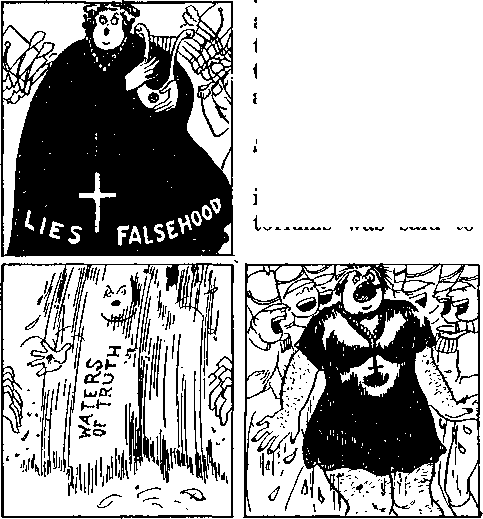
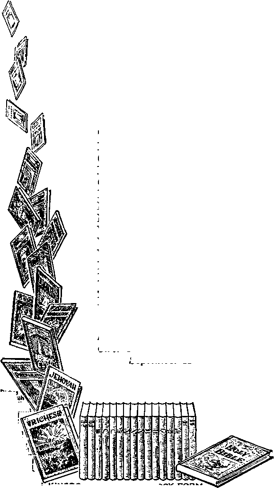

A JOURNAL OF FACT HOPE AND COURAGE
iiiiiiiiiiiiiiiiiiiimimiiiimiiiiiiiiiiiiiiiiiiiiiiiimiiiii
in this issue
"COMMUNISM” THE ROUTE TO FASCISM
A RUSSIAN EXPERIMENT
SUGGESTIONS ON SCIENCE
DEMONISM RAMPANT
EXPOSED (i)
AROUND THE WORLD
DISOBEDIENCE
DISHONORS GOD AND CHRIST
lllllllllillllllllllllllllllllllllllllllllllllllllllllllllllllllllllllllllllllll
every other WEDNESDAY
five cents a copy one dollar a year Canada & Foreign 1.25
Vol. XVIII-No. 465 July 14, 1937
■•Oro-.
LABOR AND ECONOMICS
Diamond Match Co. Does Fine Thing 660 A Missionary’s Experience in Korea 662 Widow’s Allowances
Where Will They Go in Gas Attack ? 664
SOCIAL AND EDUCATIONAL
Afraid to Come Out of
Where Was the Good Samaritan? 660 The “Charity” Business in London 660 A Question About Flowers
Witnessing Above the Clouds 671
FINANCE—COMMERCE—TRANSPORTATION
Big Business Short-Changes Indians 660 Pan American Airways to
Vacation Trips to Rio de Janeiro 663
Estonia’s Form of Fascism 664
Churning for Fascism in Belgium 665
The Iron Guards of Rumania 665
Growing Accord Between Fascists 665
China Becoming More Nationalized 666
AGRICULTURE AND HUSBANDRY
Thermostatically Controlled Farms 661
Argentine Com Pours into America 663
SCIENCE AND INVENTION
Autogiro an Aid to Agriculture
TRAVEL AND MISCELLANY
Largest Movement of Great Trees
Shanghai the Banner Radio City
Remarkable Deliverance from Death 663
POLITICAL—DOMESTIC AND FOREIGN
“Communism”—the Devil’s
Why the Archbishop Was Included
RELIGION AND PHILOSOPHY
Poltergeist in Magistrate’s Home
Chinese Nearly as Savage as Italians 666
-------— --------~~——— ■ ------—---
Published every other Wednesday by GOLDEN AGE PUBLISHING COMPANY, INC.
117 Adams Street, Brooklyn, N. Y„ U. 8. A, Clayton J. Woodworth President Nathan H. Knorr Vice President
Charles E. Wagner Secretary and Treasurer
FIVE CENTS A COPY
$1 a year, United States; $1.25 to Canada and all other countries.
Notice to Subscribers
Remittances : For your own safety, remit by postal or express money order. When coin or currency is lost in the ordinary mails, there is no redress. Remittances from countries other than those named below may be made to the Brooklyn office, but only by international postal money order.
Receipt of a new or renewal subscription will be acknowledged only when requested. Notice of expiration is sent with the journal one month before subscription expires. Please renew promptly to avoid loss of copies.
Send change of address direct to us rather than to the post office. Your request should reach us at least two weeks before the date of issue with which it is to take effect. Send your old as well as the new address. Copies will not be forwarded by the post office to your new address unless extra postage is provided by you.
Published also in Bohemian, Danish, Dutch, Finnish, French, German, Greek, Japanese, Norwegian, Polish, Spanish, Swedish.
British Canadian Australasian South African
Entered as second-class
Offices for Other Countries
34 Craven Terrace, London, W. 2, England
40 Irwin Avenue. Toronto 5. Ontario, Canada
7 Beresford Road, Strathfield, N. S. W., Australia Boston House, Cape Town, South Africa matter at Brooklyn, N. Y„ under the Act of March 3, 1879.
Volume XVIII Brooklyn, N.Y., Wednesday, July 14, 1937 Number 465
“Communism”—the Devil’s Route to Fascism
(Part 1)
THE objective of the Devil is world-wide Fascism, under the direction, preferably, of tools like Mussolini, but pleased to take Franco, Hitler, or any like Catholic that will do his bidding. A Protestant would do just as well, only if he will do what he is told. America is headed for Fascism, and the United States Government is doing what it can, and all it dares, to aid the Hierarchy (chief instrument of the Devil) put his plans across.
Here is an example:
Just another bastard, just another doorstep job; in fact, just one more lie
Fordham University is a Roman Catholic institution. Its professor of law is Edmond Borgia Butler. Mr. Butler is secretary of the governing board of the Emergency Relief Bureau. It now appears that the Workers Alliance (alleged to be Communist) has 406 hours of contacts with the branches under Mr. Butler’s control, while all other organizations (596 of them all together) have a grand total of 1,130 hours; that figures out at about two hours apiece, as against the “Roman Catholic Communist” (?) layout of 406 hours, so skillfully framed up by Mr. Butler.
The Hierarchy is working tooth and nail to make Communism look like the big issue in America, and doing everything possible to make the balloon as big as possible. What a farce! When the Hierarchy-made Communism is big enough, there will be a grand rush of the Hierarchy-controlled newspapers and the Hierarchy-controlled American (?) Legion to make it clear to America that her only salvation from Communism is to turn everything over to the Hierarchy.
Others besides The Golden Age have caught on to the methods by which the Hierarchy is out to capture America. The following is to the point:
Football. The discrepancy between actual evidence of Communism in the United States and the publicity which Communism gets puzzles many keen observers.
A great religious group is making all possible capital out of the “Red menace’’. No opportunity is lost to publicize an arrest of a Communist or to play up a meeting of a handful of would-be Reds. The Communists always put on a good May Day show in New York city, but a careful checkup reveals that they have neither bulk nor weight in the nation at large.
Some responsible New York leaders deplore the disproportionate fanfare stirred up by the doings of a small and essentially insignificant movement. The religious group is not averse to publicity, and, of course, the Communists revel in it. So everybody is happy except those who feel that public interest is being used as a football to serve group purposes. (Reprinted from The National Whirligig. Copyright McClure Newspaper Syndicate, 1937.)
Who says America is ready to rush into the arms of Communism1? Who but the great (?) “Reverend” “Father” Coughlin? He ought to know. You heard all about his following of 8,000,000 people and how they melted away to Roosevelt like snowflakes in July. Did that faze Charles E.? Not at all. The Hierarchy figures that the common people have no sense and will always believe everything every priest tells them, regardless of how silly it is.
And so Coughlin, in his periodical Social Justice, in a scare headline five columns wide and four inches deep, issue of May 24, 1937, quotes with joy the following: (From Governor Murphy of Michigan) “Communism . . . is here.” (From President Roosevelt) “[When] Communism breaks in America, it will be in the Detroit area.” Do you believe any of them really mean it? Not in the slightest. All are working to one common end: the turning of everything in
“’ntr oooaut ot hyiag ■ Man prtrfly"
"WhoM [preaeaee] u according to the vertaax ot Satan, with all pouer and aigni and lying wonders."—i Thaw, 2.9, AJLT.
America over to the Hierarchy.
The state secretary of the Communist party in Michigan personally visited the Chrysler plant at Flint, Michigan, to see the facts for himself and found not one Communist involved in the sit-down strike there. He was of the opinion that those endeavoring to fasten the blame upon Communists were acting as stool pigeons for others; and his suspicions are undoubtedly correct.
At Windsor, Ontario, Roman Catholic priest “Reverend Father” Gregory L. Blonde publicly alleged that seventeen members of the Windsor police department are Reds. Immediately brought to task by the Board of Police Commissioners, he had to confess that he could not name a single police official who is a Red, and that he had merely repeated what others had told him.
The mayor and others thereupon gave him a good tongue-lashing; which served him right.
California had another “red” scare. Red flags were noted along certain highways, bearing cryptic numerical symbols. The constabulary gathered them up, and then the State Highway Department got mad because the work they had done showing where certain roads were to be widened had to be done all over again.
Readers of The Golden Age will be amused to learn (?) that John the revelator was a Communist. At least that is what the “Right Reverend” Monsignor J. A. Pompeney, Roman Catholic theologian, thinks. In an address, eight full columns of which are printed in The Kansas Workman (R.C.), he said:
Men who do not see ‘red’ and who do not think ‘red’ with the communists, know that the millennium is only a dream that ends ultimately in a nightmare of con
fusion and of political death.
Professor Harry F. Ward, of Union Theological Seminary, has been telling the Methodists that anti-Communism is a smoke screen behind which the pope, Mussolini and Hitler are lined up to destroy democratic government. He says, truthfully, “The issue is not Fascism or communism; it is Fascism or democratic government.”
It is most interesting that within a period of about five days, around September 15, 1936, all the principal dictators of Europe, Hitler, Mussolini, Metaxas, Schuschnigg, and Pope Pius XI, launched into violent attacks upon Communism.
Manifestly these attacks radiated from a common center and that center is Vatican City, with the object of stirring antipathy against the Spanish Republic and in favor of the discredited and vicious Roman Catholic rebels that are finding Madrid a harder nut to crack than they had anticipated.
Dictators always have to have an excuse for robbing the people of their liberties; which is why General Metaxas, dictator of Greece, was loud in his outcries against Communism when he threw the Greek constitution into the scrap heap and announced Greece would have no more parliaments.
Big Excitement/
Big Drive on Reds!
It is time for everybody to get excited. Here is a statement from Chicago that “a group of grim-faced men today were mapping in Chicago a nation-wide campaign against Communism’s assault on American religious institutions”. Reading on it seems that they were Catholic, Protestant and Jewish clergy.
toriums was said to
Woeful tale of the fair (?) wanton
And then here is another statement that 200,000 Catholic Daughters of America will try to enroll another 100,000 women so that they can all go after the same birds. And so on, and so on, ad infinitum.
And these pesky Communists: how many of them are there? Well, to get down to facts, there were in the national election a grand total of 80,096 Communist votes out of the 45,818,198 votes cast. And, ladies and gentlemen, you can see yourself that, if in every village in the United States there is one Communist voter out of every 1,772 voters in the town, what a terrible crisis this is.
Why, you poor sap, right here in free America the Communists have got such a hold that there is almost one of them to every 4,000 persons in the land; and if that wouldn’t scare the pajamas off your Aunt Mehitabel, what would ?
Some idea of the terrible danger of Communism’s grabbing the Empire State may be gathered from the columns and columns and columns against Communism in every Rome-controlled paper in the country. Also, there is the actual fact that, in the last election, out of 3,293,222 voting in New York state there was a terrifying total of 40,406 Communists. Why, man (Stop your laughing! haven’t you got any sense?), that is one out of every 81 voters in the most populous state in the Union, and you can see yourself that as soon as 3,252,816 of the voters come over on their side they will have all the voters in the state. This is a warning to all Roman Catholics to hurry up and rush into the arms of the Hierarchy while yet there is time, and bring along as many suckers with you as you can find. Rome needs them.
Big excitement in New York city! Mass meeting against Communism! One of the big audi-
be two-thirds filled! Al Smith was one of ye great speakers and should have elicited great applause with his admission:
I never read any intelligent explanation of the Communist government other than that it was a wild theory.
Mr. Smith should
have gone on to say that, though he knew nothing about what he was fighting, he was fighting it anyway, because he is a Catholic and the Hierarchy wants him to fight it; and the reason why they want him to fight it is that the American people will look to the Hierarchy as the “saviors of civilization” and cheerfully turn everything over to them to run as they see fit. “Reverend” Edward Lodge Curran, of Brooklyn, was also there in the same capacity and for the same reason as ex-Governor Smith, and had the same mental grasp of the situation, but he said one thing that Al did not say, and that shows what was in his mind, and his real motive, i.e., civil war:
We hope we haven’t waited too long, as they did in Spain, where tonight they are fighting it out. If the Communists want it that way, we will give it to them.
There you have it, ladies and gentlemen, a distinct threat of civil war if the Roman Catholic Hierarchy cannot have its way with the duly elected government of the United States, as it is trying to have its way with the duly elected government of Spain. In the one case it encouraged the military officials to break their oaths of allegiance, and turned its churches and convents into arsenals. What will it do in the other case? "Father” Curran went on to say:
We cannot fail.
That is what Franco thought; but he may be wrong. Madrid still stands.
Borough President Harvey, of Brooklyn, one of the speakers, was reported as saying that “Father” Curran was raising an army to drive the Communists out. What he should have said is that Curran, if he is really raising an army, is raising it to get the Hierarchy in.
In Berlin the “Reverend Father” Joseph Rossaint, “Reverend Father” Kremer of Remscheid, “Reverend Father” Steber, “Reverend
Rev. Isa Sneak, S.J., D.D.
The world’s premier Communist propagandist
Father" Clemens and two other Catholics were fried for reading and circulating Communist literature regularly during 1933 and the early part of 1934. The New York Times had a 16-inch story on this, grieving over the fact that the trial was in its second week. Here was a case where the Roman Hierarchy was caught red-handed in the manufacture and circulation of real Communist propaganda.
“Reverend Father” Rossaint was sentenced to eleven years’ penal servitude, “Reverend Father” Steber to five years, “Reverend Father” Julitch to two years, and “Reverend Father” Kremer to one and one-half years. The “Reverend Fathers” Clemens, Himmes and Schaefer were acquitted, for lack of evidence. Following precedent, quite possibly all were let out the back door the same day they went in the front door.
But now here is the devilish part of it, and the New York Times cannot well be innocent of what it published. Immediately following the 16-inch story of what happened to these guilty Catholics was a two-inch item from Frankfort-on-the-Main referring to the trial of Jehovah’s witnesses and making the malicious and false statement:
Thirty-six were accused of having received Communist propaganda from Lucerne, Switzerland, “clad in the guise of religion.”
The great Jehovah God will not hold the New York Times guiltless for its act of perfidy in letting this piece of Roman Catholic propaganda go through its hands, and attempting thus to shift to the shoulders of absolutely innocent Christian men and women the guilt for Communist propaganda which it should know, and must know, and does know lies squarely on the Hierarchy.
“F a t h e r” Rossaint, “F a t h e r” Kremer, “Father” Steber and “Father” Clemens introduced Communism into Catholic Youth groups and Rossaint allowed Communists wanted by the police to sleep at his house; he also distributed Communist literature. Jehovah’s witnesses did none of these things, but the New York Times lets itself be used as a cat’s-paw to divert the blame to them. The indictment against the four priests and their coconspirators covered 154 typewritten pages and 27 witnesses appeared to prove the charges of the Catholic-Communist conspiracy.
Arnaldo Cortesi, Rome correspondent of the New York Times, makes the significant admission that Communism and Fascism are definitely moving towards each other. This admission supports the view that both are of the Devil, through Gog, his prime minister, and both aim at the complete subjugation of the people to the state. That both are dictatorships needs no argument.
The fact that Stalin was educated for the priesthood is borne out by the fact that when he gets ready to kill off a bunch of influential men they are all brought into court and condemn themselves to death and admit the most impossible and foolish things imaginable.
In the Soviet trials there is the same abandonment of all the elementary principles of justice, the absence of authentic documents, the absence of independent witnesses, and the absence of legal defenders, that characterized the Inquisition.
The pope and Stalin should get married: they are as alike as two peas in a pod. Nobody with any sense could have any sympathy for either one of them. Radek testified he was tortured for ten weeks to make him tell the story the O.G.P.U. wanted him to tell.
Are Jehovah’s witnesses communists? Most of our readers will smile at the question, but many are aware that the Roman Catholic Hierarchy is trying to put across the idea that they are communists. It will not be difficult to disprove this foolish charge, born of a desire to hinder people from learning the truth of God’s Word.
Soon be big enough to scare the cowardly papal matadors of the public press into 17 assorted and categorical fits
As far back as 1895 The Watchtower (official organ of Jehovah’s witnesses, then known as Bible Students) stated, “The Bible does not teach communism.” This statement appeared in an article entitled, “They Had All Things Common.” The article was a discussion of the scriptures concerning the temporary communal arrangement in the early church, and showed that while the apostle Peter and other apostles co-operated in that arrangement, neither he nor any of the others ever taught it.
It mentions the fact that the apostle Paul instructed the church to do things which it would be impossible to do as members of a communistic society—each to “provide for his own”; to “lay by on the first day of the week” something for the Lord’s service, according as the Lord had prospered them; that servants should obey their masters, rendering the service with a double good will if the master were also a brother in Christ.
In The Watchtower of January 1, 1902, appears another article dealing with the same subject, the general trend of which is indicated by the following quotation :
It has been assumed by some that communism as that term is applied today was practiced in the early church; and it is the claim of some that it should never have been discontinued, but should always obtain amongst the Lord’s people. We answer, first, that the early church did not practice what is now known as communism; second, that something akin to what the early church did practice (but modified) still is the rule amongst the Lord’s saints; third, the extreme view (and practice) of the early church was apparently not intended to remain, was never enjoined by the Lord nor the apostles, and serves rather as an evidence against the feasibility of the doctrines of communism under present conditions.
So far as the record shows, there was no compulsory division of wealth, such as communism purposes. On the contrary, everything was voluntary; and everything of the same kind is just as free, just as voluntary, and just as proper, now as then—no more so, no less so. Some of those who owned farms and personal property sold them and brought the money and placed it at the apostles’ feet—gave it into their charge. Some may have given all that they had in this manner, but it is not so stated.
On the contrary, various things give the inference that Barnabas, who sold the field and gave the money, may still have retained other properties, which no doubt he would have been willing to have disposed of later, and to have made similar use of the money as it might be needed.
The sin of Ananias and Sapphira did not consist in their not putting all of their property into the common treasury, but in their deceitfulness in the matter; —in their pretending to give the entire proceeds of one property when they did not do so. Some Scriptures clearly intimate that seme of the Lord’s people at that time had private possessions aside from those which were put into the common fund. (See Acts 12:12; 21:16) ...
It is noteworthy that the apostles neither commanded nor advised communism; nor do their writings intimate that it prevailed in the early ehurch. As showing that there were both rich and poor in the assemblies of the primitive church, note the apostle Paul’s words to Timothy,
“Charge them that are rich in this world, that they be not high-minded, nor trust in uncertain riches, but in the living God, who giveth us richly all things to enjoy: that they do good, that they be rich in good works, ready to distribute, willing to communicate; laying up in store for themselves a good foundation against the time to come, that they may lay hold of eternal life.” (1 Timothy 6:17) . . .
The apostle James says,
“If a brother or sister be naked, and destitute of daily food, and one of you say unto them, Depart in peace, be ye warmed and filled, notwithstanding ye give them not those things which are needful to the body, what doth it profit?”—James 2:15,16.
More recent publications of the Watch Tower Bible and Tract
Latest development of a famous pox
Society give evidence that Jehovah’s witnesses do not look to communism for deliverance from oppression any more than to other human governments. In the booklet What You Need, under the title “Earth’s New Rulers”, appears the following :
Imperfect men are all more or less selfish, and where selfishness exists a perfect and righteous government cannot exist. The radical movements, such as Communism and Bolshevism, could never establish a desirable government, because these, like other organizations, are controlled by selfishness.
The greater the ignorance and the greater the selfishness, the more unsatisfactory the rule or government. It must be apparent, to all who think, that no men now on earth could establish and carry on a righteous government. With keenest interest, therefore, every thoughtful person should give heed to the manner in which Jehovah will establish a righteous government amongst men.
In the book Government the following paragraphs well set forth the views held by Jehovah’s witnesses with respect to communism:
Looking over the history of the nations whose governments have been either that of a monarchy, an aristocracy or a democracy, not one has been found to be entirely satisfactory to the people. The history of every nation shows that it has been a struggle between the classes. It has been a few against the many. It has been a contest between the exploiting and the
exploited.
As a general rule, the class smaller in number has ruled and oppressed the class greater in number. These struggles have resulted in many revolutions, great suffering, and much bloodshed. Out of these struggles have developed the various theories or forms of government called radical, including communism, socialism, the soviet and bolshevism. The birth of these has been due to the struggles of the oppressed.
Communism advocates a sharing of all things in common, aiming at the abolition of private ownership of property and at holding of all property for the benefit of the community.
Socialism holds that the means of production and distribution of the wealth of the nations are the collective properties of the workers, who by their efforts produce that property, while the goods which are to be consumed become the private property of the individual workers. Such government would do away with the aristocratic class.
Out of the World War was born the soviet government of Russia. Peoples of that nation had long suffered under a monarchy that bordered closely upon a tyranny. The war furnished the opportunity to overthrow the monarchy. “Soviet” really means council or harmony. The soviet government, however, has been anything but harmonious.
The government is made up of councils of working men and soldiers called deputies. There are various councils and one supreme council. The Soviet rule is called an organized form of dictatorship of the proletariat, but this government denies the right of suffrage to certain classes. The soviet government has not been a success and never can be, and is far from being satisfactory to the people who have tried it.
As in all other forms of government where the people are supposed to have a voice, the demagogues and party men dominate the various councils; and therefore the government has presented no advantages over any other government. In fact, bolshevism has resulted in great suffering of the people, and it is feared by many of the other nations and governments of the earth.—Pages 244, 245.
Bolshevism is doomed to certain and complete failure. The same must be said of communism. Such radical movements for the establishment of a government of the people can never bring peace, prosperity and happiness to the peoples of the nations. Many other nations of the world greatly fear bolshevism, and properly so.
Any form of government that denies the rights and privileges of some and shows special favors to others is certain to end in disaster. Monarchies have been harsh, cruel and oppressive of the people, but bolshevism and communism are even worse. No government can bring happiness to the people unless it is founded upon honesty and administered in righteousness.— Page 13.
The government which Jehovah God will establish with Christ as its King is the only real hope for the world. It will bring that which all honest men instinctively desire, though they know not how to express it and are not aware as yet that this grand panacea for man’s ills has been provided by a gracious Creator.
The Roman Catholic Hierarchy is seeking to brand “Communist” everyone who does not bow to its whims. Thus it hopes to clear the earth of those who for one reason or another are not in favor of being exploited by selfish religionists, or who from devotion to principle and obedience to Jehovah God would rather die than imply by word or gesture that the same Roman Catholic Hierarchy is the acme of goodness and truth, when it is in fact the most insidious and wicked foe of Christ and Christianity that ever disgraced God’s footstool.
The Hierarchy is a sorry refuge from the errors of communism, and subserviency to its dictates is a most undesirable alternative to the dictatorship of the proletariat. Of two evils, choose neither. Jehovah’s witnesses will continue to look for the government that is founded in righteousness, and which even now is making itself evident through the resistless testimony of events in fulfillment of divine prophecy.
‘They shall sit every man under his vine and under his fig tree’ (1 Kings 4:25), subject to neither landlords nor communal ownership, but only to the true God, Jehovah, and His King, Christ Jesus. (1 Corinthians 15:28) In the golden age, now at hand, this will be the arrangement in all the earth.—The Golden Age No. 369. (To be continued)
A Russian Experiment By James A. Williams
THE aftermath of the revolution in Russia brought with it many problems demanding the immediate attention of the new rulers, not the least of which was that of dealing with the “homeless children” who were becoming a menace in Moscow and other large towns. These young people had formed themselves into gangs and were living by theft and other crimes. In order to assist in coping with this problem a colony, known as “Bolshevo”, was formed. In course of time, as the children grew older and conditions improved, a new use had to be found for the colony. It was therefore decided to turn Bolshevo into a center for dealing with hardened criminals, having as its object the turning of them into useful members of society, and today results prove that this object has been attained.
As a rule, only criminals with a record of three terms of imprisonment are admitted to the colony, where they lead a life as nearly as possible similar to that of the ordinary Russian citizen. No special uniform is worn and, although the unmarried members sleep in a dormitory, the married ones live in flats. Work is provided in the factory, where sports goods, such as tennis rackets, skis, footballs, etc., are made, or in the grounds of the colony, where fruit and vegetables are grown. The colonist receives the ordinary wage of the Russian worker, subject to a substantial reduction during the first few months, when money might constitute a strong temptation. Wages are paid at all times in a special currency making impossible the purchase of playing cards or vodka and other intoxicants. Gambling, drugs and drink have been the chief failings of those who enter the colony.
For shopping purposes a co-operative store is run. Recreation is provided in the same way as for other workers in Russia. In fact, the only difference between colonists and ordinary Russian citizens is that the former have lost their citizenship and have no right to become members of a trade union or of the Communist party until citizenship is regained. Also, they are not free to marry, either a girl in the colony or one from outside, nor, if married, can they bring their wives into the colony, unless the permission of the executive is obtained. Such permission is not usually granted until after the first eighteen months of life in the colony.
Another difference between life in Bolshevo and that outside is that colonists must be indoors by 11 p.m. After that time, however, they are permitted to talk or read if they wish, and those who know something of the average Russian need not be told that plenty of talking goes on until well after midnight.
Three kinds of punishment are inflicted: deduction from wages, loss of the weekly rest-day, and, worst of all, expulsion from the colony. The latter is applied only in cases of theft.
One of the most striking features of Bolshevo is that there are no warders, no police and no officers except the director of the factory, the doctor and one or two other officials. Any member of the colony is free to leave at any time, but if he does so he is seldom, if ever, able to return, and that means that his hope of regaining citizenship has gone.
A polyclinic and a hospital care for the health of the community and, while the percentage of sickness is above the normal during the first few months after a colonist’s entrance, thereafter health conditions are normal. Improvements in this as well as in other matters are paid for out of the profits on the goods made by the factory, and, as marketing troubles are unknown in Russia, there is never any difficulty in disposing of stock.
As in other parts of Russia, not more than 10 percent of wages goes in rent. Meals, which are not expensive, are usually taken in one of the factory canteens, managed by a colonist who has chosen to remain in Bolshevo after the expiration of his time. Some of the married colonists prefer having their meals at home. On free days members of the colony are at liberty to go where they will and, following the usual practice in the Soviet, they receive full pay when on their yearly vacation. General and technical education is afforded, while children, of course, go to school in the ordinary way.
The usual amenities of a Russian factory life are provided: radio, a club, cinema, sports, and so on. Lectures are given from time to time, while a specially equipped theater, a fine studio for the art class, an orchestra, athletics and lawn tennis help to make conditions such that many workers in other lands might envy.
An example of what can be accomplished is seen in the case of Avdeyenko, a former thief and murderer, found, after a drunken brawl, unconscious in the snow by some members of the colony. He was taken to the commune, but the freedom of the place soon began to pall. He would stay away from time to time, and was disappointed to find that nobody interfered with him. No locks, no bars, no roll call! For one who had always looked upon society as his enemy, this was too bad!
In course of time, however, he began to fit in with the scheme of things, although there were occasional lapses. Things seemed to reach a crisis when he violently assaulted another member of the colony and was tried, not by a judge, but by the colonists themselves. From that time forward he became a useful member of the community, learning to read and write, and ultimately—proudest day of all—being recommended for membership in the Young Communist League. Citizenship regained, married and happy, Avdeyenko is now a Russian novelist of distinction, and society has a friend where it once had an enemy.
Bolshevo has been a bold experiment, the success of which cannot be gainsaid. An English critic of Russia, and one of the strongest critics at that, wrote on returning to England, after a visit to the colony, that what he had seen there made him feel that the spirit of Christ still existed on earth.
What are some of the reasons for this success? First of all, Soviet Russia is a land unhampered by traditions and is therefore free to experiment in a manner feared in other countries. Public opinion, which hinders prison reform in a country like England, a country in the van of such reform, counts for little or nothing in Russia. Then the psychological attitude toward criminals in Russia is fundamentally different from that in other countries. In Russia a criminal is looked upon as an individual whose work is needed by the state, while in practically every other country a criminal is looked upon as a menace to society and one to whom to give employment would in itself be almost a crime, as it would increase the already large army of unemployed. One of the greatest difficulties in starting such a colony in practically every country apart from Russia would be the finding of suitable work for the colonists which would not compete with the existing overproduction outside.
The aftercare of prisoners is another problem existing in countries outside the Soviet, where, after his discharge from Bolshevo, a prisoner finds no difficulty in obtaining employment. The democratic idea of self-government and equality existing in Russia makes practicable and natural the management of the whole colony by its members and also does away with the “prison stigma” which is an obstacle reformers in other lands find difficult to surmount.
The success of this experiment proves that liberal reformers elsewhere have the right idea. There is, however, only one way to deal with the problem of criminals, and that is to prevent crime; and crime will never be prevented until Jehovah’s King holds sway from one end of the earth to the other. Until that time all efforts of men, however good, must fail.
A TWO-COLUMN article in the New York
Times, by a Roman Catholic correspondent on the spot, devoted exclusively to the matter of terroristic methods on both sides, after admitting that on the anti-Fascist side there have been executions of marked persons “interlarded with cases of personal vengeance”, declares the definite opinion that:
On the Insurgent side the executions have been in masses, often marked by torture, and on a far larger scale in proportion to the population. Treachery has also been a frequent feature of the executions on this side.
This staff writer of the Times, Lawrence A. Fernsworth, basing his opinion upon cases of political bossism, exploiting of the poor, and immorality which were brought to his attention made the general observation “that the priests all too frequently failed to win the most elemental respect of the people”.
Don Ferdinand de los Rios, in an address to the New York Press Club, said of the Fascist rebels now trying to overthrow the Spanish government:
The social forces which support the rebel movement have been the very ones which, during the years when they were last in power, refused to found schools for the education of the people, refused to take measures toward public sanitation, failed to open libraries in towns and villages, and kept farm wages at the low level of 12 to 20 cents a day.
AT Rudolstadt, Germany, twenty-five of Jehovah’s witnesses were placed on trial charged with not forsaking the assembling of themselves together; also with practicing Christian baptism; also with refusal to kill their fellow men; also with preaching the gospel to others. For these terrible ‘crimes’ one man was sentenced to five years in prison, another to three years, and others to lesser terms. One man, Paul Schlegel, formerly a leader in the witness work, but latterly turned away from it, and who having taken part in the plebiscite was no longer in harmony with the witnesses, was given one year and three months in prison.
Talkies in Lhasa, Tibet
A SINGULAR indication of the progress of the times is that a motion-picture show is being established in Lhasa, Tibet, the forbidden city. It will be the latest and best films that will be shown, and these will unquestionably have a great effect upon the Tibetans.
DESPITE his efforts to the contrary, man does occasionally learn something, or thinks he does, and what he thus learns he calls “science”. He often has to revise and modify his findings, but makes progress, nevertheless. Following are some things he recently learned:
Science corroborates the statement of the Scriptures that the earth ‘hangeth upon nothing’ and is therefore a globe. The highest camera shot ever made, taken from an elevation of 13| miles, and with the horizon 350 miles away, plainly shows the horizon like a great arch across the photograph. Particulars are in the May (1936) issue of The National Geographic Magazine.
Details of the continents buried by the Flood are now being brought to the surface by a punch which, dropped on a line a mile and a half deep bites off a bit of the bottom. The true and ancient shores of the oceans seem to average a mile below present sea level; so says Prof. Reginald A. Daly, of Harvard University.
It is believed that the oldest living creatures on earth are some insects and a few lobsters found recently in central Siberia, dug out of the solid frozen earth, where they have been since the days of the Flood. The method of revival was not stated.
Under 400 feet of gravel, in a mine near Fairbanks, Alaska, there have been found skeletons of mastodons and other creatures that perished at the time of the Flood. Here is a poser for unbelievers in God’s Word. How did that deposit of 400 feet of gravel come to be over the bodies of those mastodons?
Wonders of the deep in the year 1936 were an absence of the heavy belt of ice usually present along the east coast of Greenland, the presence in the North Atlantic of the largest schools of sharks ever seen in those waters, and the discovery off Aberdeen, Washington, of the carcass of a 1,300-pound sea serpent unlike any ever before identified by scientists.
One would think that the most unlikely of human occupations would be that of melting glaciers; but the Russians are making use of the fact that by blackening the tops they get from two to five times the usual meltage, and this helps irrigation in certain places in Asia where more water is badly needed.
At Devil’s Lake, N. Dak., in January and February, 1936, the average temperature was 13 degrees below zero. The first week in July, 1936, at the same place, the temperature was 112 in the shade. Like extremes, though not as great, characterized many parts of the United States in the most trying year in American weather history. In between, there were the worst floods ever known in the Ohio Valley and on the Atlantic seaboard, with bad dust storms in the West and hurricanes in the South.
On September 28, at Denver, Colorado, there was a fall of 17 inches of snow, but for two full weeks thereafter it was a pleasure to sit by an open window almost anywhere along the Atlantic seaboard enjoying an autumn that up to the middle of October was entirely devoid of frost.
Astronomers and all other intelligent men are interested in the progress being made on the 200-inch glass eye, made at Corning, N.Y., of the greatest telescope ever constructed. This lens, now in its seventh year of construction, will be completed and mounted in about five years more. The lens was poured December 2, 1934, and was cool enough to inspect November 26, 1935. No flaws were discovered..
The new polaroid glass, made of three layers, changes the glare of oncoming headlights into a soft purple light enabling the driver to clearly see the road, approaching car and pedestrians; it also makes possible three-dimension movies in natural colors, and is expected to have many other important uses.
Dr. Elmer E. Hotaling, of New York, claims to have helped cataract patients delay the development of cataracts over a period of seven years by fitting them with cool green lenses which allow very little of the unwanted rays to seep through.
The windows in the Chrysler show room of Marcus & Company, Fifth avenue, New York city, are so designed as to be invisible. The glass curves inward and downward toward black velvet, and the only way the glass can be seen is to get down on hands and knees and look up.
A young man of 21 years of age, resident in London, has perfected a system of colored lighting which blends with organ tones. Thus the organist is able to produce stage effects without turning his eyes from the console of the organ.
The suggestion has been made that the blind in the United States should use white canes, as
is done in Paris with good results. By the way, every person in New York state who goes blind as a result of injuries to his eyes received while at his work averages to cost his employers $20,000.
The electroencephalograph is a picture of what you are doing with your mind. It is not exactly a mind reader, but when it is attached to the scalp and the lobe of the ear, and the ensuing waves are amplified, if nothing special is going on in the mind the waves are regular and small, but if the mind is concentrated on a mathematical or other problem the waves are much larger and irregular.
William A. Winterbottom, vice president of RCA and general manager of RCA communications, observes that radio engineers are baffled by certain radio signals between 9 a.m. and 6 p.m. that are unlike any known earthly radio signals, and he has admitted the possibility that they come from outside this planet. They are usually observed on definite frequencies.
A radio check-up on a talking teakettle in Portland, Oregon, showed that the talk came from an amateur radio operator next door, only when the operator was broadcasting on 80 meters.
Manhattan’s noises have been analyzed. Of 15,000 noises measured 30 percent were caused by elevated railways, 25 percent by trucks, 20 percent by street cars, 10 percent by automobile horns, 5 percent by buses, 5 percent by other autos, and 5 percent by hucksters and miscellaneous.
The way the deaf are made to hear music is through a rod placed on the head or face bones, the funny bone of the elbow, or the kneecap. The rod is attached to a special gramophone. The vibrations of music or speech are carried to the nerves of hearing along the bones of the body.
Antoine Sax, instrument maker, who in 1848 invented the saxophone, died in poverty, in Paris, in 1894. A saxophone has 548 separate parts and is one of the simplest of wind instruments. Some French horns contain as much as seventeen feet of tubing.
A Jw who wears shoes says:
When shoes need repairs, go to a ten-cent store and get rubber soles instead of paying a dollar or so for leather ones. Buy an extra pair (men’s size) and cut heels to fit your shoe, and glue on as for soles. Then cut another piece to fit half your heel and glue on the side inclined to run over. Renew these when necessary and you can save dollars. You will seldom need to wear overshoes, either.
Ten gallons of skimmed milk will produce 3| pounds of Lanital, the new Italian fabric. Recently, the Italian ambassador at London appeared on the street in garments made exclusively of Lanital.
The umbrella makers say that nobody buys their wares any more. They made 27 million umbrellas in 1927, and seven years later only 5 million. The automobile is held largely responsible;
Cotton is now used to produce more than 900 different products used in everyday life. Textiles, foods, lacquers, explosives, cordage, fertilizers, oils, medicines, insulating materials, safety glass, plastics, etc., are but a few of the bewildering variety of useful things now made from the staple crop of the South.
A sheet of thin paper, standard letter size, 8| by 11 inches, can be folded six times, resulting in 64 little squares each a trifle over one inch square. To fold a piece of paper nine times as often, i.e., 54 times, it is claimed, would require a sheet 185,000,000 miles long. If you doubt it, try it.
NATURE bears abundant proof of the gradual development of the things of earth. It is not necessary, however, to speculate wildly about millions of years, as many “scientists” are fond of doing. Such gain “fame” by the nunjber of ciphers they add to figures supposedly setting the date of the existence of certain creatures upon the earth in times past. The period of time devoted to the creation of things on earth can be Scripturally shown to be six “days” of seven thousand years each, or a total of 42,000 years. This period of time is doubtless sufficient for the work which Jehovah accomplished. This conclusion is supported by present changes in the earth’s crust, which often proceed rapidly. See The Golden Age No. 464 and Creation.
IN Newark three Negroes, trapped in a burning building, could have escaped by jumping five feet to the uptilted end of a coal truck, raised for them. Carried away with the nonsense that the Harlem Negro is God, they refused to jump, claiming that “Father Divine” would save them. All perished.
“Father Divine” has such a poor memory, or such beautiful and sublime ability to lie like a horse-thief, or both, that he has no recollection of Mrs. Verinda Brown’s handing him in cash $4,016 in return for a place in heaven, nor of himself as paying $8,000 in cash for one of the “Promised Lands”. When faced in court with a $6,152 civil judgment suit obtained against him in a Maryland court, “Father Divine” said “I do not recall” or “I don’t know definitely” or “I could not know”, or words to that effect, in answer to every question touching on the financial arrangements of his so-called “Peace Mission Movement”. He could not remember whether or not he was present when large real estate deals were made which he had advised, and, in short, could not remember anything that it was his plain duty as head of his movement to remember.
Demons grossly deceived an eight-year-old girl at New Delhi, India, representing to her that she was formerly the wife of a merchant at Muttra, and had died in giving birth to a son. Investigation disclosed such a birth and death and “recognitions” all round. Thousands are being deceived by this clever stunt of the devils.
At Allahabad, India, a Yogi remained forty-five days in a tomb 16 feet square and 4 feet high, cemented in, and thus without air, water or food. Reports said he showed little traces of suffering except a white pallor. His hand had been partly eaten by ants. The Devil takes care of his own.
The Yezidis, worshipers of Satan, scattered all over the Orient, have erected seven towers on mountaintops from north of Bagdad to the borders of Tibet. The towers are white, fluted, and shaped like a sharpened pencil point. At the base of each tower is a priest, dressed all in black, supposedly engaged in broadcasting and receiving incantations from these towers. The Yezidis claim to have known beforehand the World War and the Russian revolution.
The Hopi snake-dancers of Hotevilla, Ariz., claim that in 1,000 years in which they have made their prayers to the Devil with snakes wriggling in their mouths the Devil has never disappointed them. Rain has always come on the completion of the dances. The explanation is simple. The prayers are frankly prayers to the Devil, and he answers them to thus further dishonor God’s holy name.
Paul Brunton, English author, who spent a night in the Great Pyramid, declares that never again will he repeat the experience. His own statement is: “Special figures had begun to creep in and around the dark room wherein I sat. A circle of antagonistic beings surrounded me. Monstrous elemental creations, evil horrors of the underworld, forms of grotesque, insane, uncouth and fiendish aspect gathered around me and afflicted me with unimaginable repulsion.”
A correspondent sends a page of the Cleveland Press and says, significantly and truthfully, “Forty percent of this page devoted to demonism.” It is a story of a shepherd in Mag-lavit, Rumania, who saw what claimed to be God, but was a demon.
When shallow minds find that there are invisible powers that may be drawn upon, they think they have found something new and valuable. Nothing of the kind. They have found only the same old evil powers that were in existence in the earth before the Flood and that were the cause of Jehovah God’s blotting out the Canaanites, Perizzites, Hivites, Jebusites, Hittites, Amorites and Girgashites from the land of Canaan.
A Western man is flooding the mails with offers to teach anybody for $20 how to know God and obtain health, wealth and happiness. The Golden Age has purposely avoided mentioning this man and his alleged “staggering truths”; his demands that the minds of others be submitted to his mind and that in the presence of his lessons they “be quiet; try to dismiss all other thoughts from your mind” and thus get the “dynamic unseen power” to “heal the sick, cast out devils, raise the dead”, etc.
This man, demonized, purely selfish, and teaching pure selfishness to others, claims to teach others about God, but does not cite a text of Scripture and is merely a tool of the Devil. He claims to have had all this knowledge revealed to him when he was “quiet”.
This is a request to readers of The Golden
Age not to send in any more “Psychiana” literature ; for such is demonism, pure and simple; nobody who loves either the God of the Bible or Jesus the Ransomer and Savior of men would have anything to do w’ith it if he knew its origin.
Hundreds of dispatches are published in the daily press that plainly show the existence of the fallen spirits, and their influence on men, women and children, and yet the newspapers are never able to find anybody who knows the truth on the subject. For instance, here is a London Daily Express dispatch from Riga, Latvia, telling of a child of ten years of age, unable herself to read or write, who can tell and relate the inmost thoughts of those who are in her presence. Thus the director of the Latvian Medico-Legal Institute tested these powers and found the child could transmit perfectly French, German and English texts read by Dr. Neureither (the director) silently, though she does not understand one word of any of these languages. In the face of evidence like this, what folly to close the eyes and ears and mind to the facts that prove the existence of these demons cast out by the Lord and the apostles, and everywhere manifest in clairvoyant and telepathic phenomena.
A dispatch from Hollywood contains the following description of a clear case of demonism caused by a ouija board:
An apparently normal twelve-year-old boy who goes into a trance and talks Persian, who lets eye specialists blindfold him carefully and then reads what is placed before him, baffled 150 medical men Sunday. The boy, Pat Marquis, outside of his trances, is normal. He discovered his apparent powers by accident, while he was playing with a ouija board.
While hypnotized by the demons Marquis repeated medical terms he had never heard, and answered questions on every kind of subject. If Marquis continues to yield his mind to the control of the invisible powers with whom he has been in contact through the ouija board, he will go insane in the end, as millions have done before him. The physicians who examined him did not in any way indicate that they knew the lad is under control of demons, though if they had even a superficial knowledge of God’s Word that would be immediately apparent to them.
British people are stirred because Abdul Latif, a Persian physician who died in A.D. 1231, is alleged to perform cures through a medium, and to have cured some 2,000 people of their bodily ills. The explanation is simple. Abdul Latif is stone dead. The medical advice and assistance comes from demons that seek thus to entrap the human family and find this an excellent means of entrance into the mind and will of the weak and suffering.
In The American Magazine a staff writer, Courtney Ryley Cooper, declares that spiritism is now so rampant in Washington that one medium was visited by nineteen governors. The whole article, extremely interesting, shows that official Washington, in great numbers, is inquiring at the door of “the witch of Endor”.
In some cities clairvoyance is illegal, but in Budapest one of the police is under control of the demons (as are all clairvoyants) and has helped to reduce the number of suicides. He has helped to solve murders and to locate missing persons and missing jewels. Stockholm may employ a clairvoyant similarly. The general employment of spiritists in police work would be a matter of grave interest to the people.
A New Zealand seafaring man caught a demon in a lie. The demon, operating as usual through a spirit medium, gave with great exactitude what purported to be the exact moment and place where Sir Charles Kingsford Smith and Mr. Pethybridge sank, 75 miles off shore, when their plane struck the water. The demon made the mistake of specifying the exact latitude and longitude, to the thousandth of a degree, and the New Zealand man discovered that the point named is on land. The demons are called in the Scriptures “lying spirits”.
At Bellevue Hospital, New York, an elderly man suffering from amnesia wTas hypnotized and gave his name as Edward Gordon Thomas. This tallied with initials on his tie clasp, but it did not tally with the facts, for his name was E. G. Trenholm; and this pretty well shows how much confidence may be properly placed in any information gained by hypnotic means.
College students at Baton Rouge, La., undertook to hypnotize one another. One boy of nervous type succumbed to the work of a fellow amateur and while hypnotized shot himself in the chest. When awakened at the hospital he had no recollection of what had happened. Hypnotism, like “religion”, is demonism, and should be shunned as a plague by all who love God and His Word.
Breaking down the human will by hypnotism, which is demonism, much is now heard of painless dentistry and painless childbirth by hypnotic means. No one who loves God will permit another to thus control his person.
The ceiling of the Philippus Evangelical and Reformed church building at Cincinnati, Ohio, caved in and set the congregation back $30,000. This is quite a hunk in these hard times; so the grown-up boys of the church hired a regular circus to act for them, including as a side-show feature a real Hindu magician and snake charmer, with the hope of getting enough coin together to pay the bill. Not sure just how they made out. The magicians and sorcerers had a hard time back there in the early church. On one occasion Paul said to Elymas:
O full of all subtilty and all mischief, thou child of the devil, thou enemy of all righteousness, wilt thou not cease to pervert the right ways of the Lord? And now, behold, the hand of the Lord is upon thee, and thou shalt be blind . . . for a season. And immediately there fell on him a mist and a darkness; and he went about seeking some to lead him by the hand.—Acts 13:10,11.
But if the clergy of today be reproached for taking sorcerers into partnership, they can set up as a defense that Paul had no church with a $30,000 ceiling to come crashing in on him, and, besides, it is said that when he did this he was filled with the holy spirit; and on this point they are entirely innocent and ignorant and their plea is 100-percent perfect.
While it is generally true that the clergymen are blind to the truth, yet here and there is one who is not entirely sightless. In an address at New Haven, Connecticut, Professor Charles A. Dinsmore, of the Yale Divinity School, made the truthful and inspiring statement, “No book compares with the Bible in the number of sentences in which thought is expressed in a form which cannot be improved.”
Somebody must have put some truth literature into the hands of Reverend Dr. William H. Rogers, pastor of the First Baptist Church, Broadway and 79th street, New York city. In a recent sermon he is quoted as saying:
Organized religion is a failure and doomed to destruction. It does not represent the New Testament faith or the Christianity of Jesus Christ. Rather it represents ritualism, ceremonialism, hierarchies, politics, modernism and worldliness. God hates religion. Religion is one thing. Salvation is another. The first is of man’s invention and thinking. The second is God’s gift in Christ. If the apostles came back in the flesh, they would not recognize very much in the organized church as truly representative of the true church of Christ.
The Philadelphia Methodist conference adopted a resolution stating:
Fifty-seven generations of Christians have come and gone, and yet the masses are still shackled by social bondage; the children of the world are deformed by child labor; the laboring folk of the world are still hired and fired and junked in the name of Mammon. More than half of the human race still goes to bed hungry and undernourished. Millions of men, anxious for work, are out of employment, with no chance except to rust and rot in idleness.
Is it not strange that men who can speak like that oppose the message of God’s kingdom as the one and only hope of the world?
Probably unaware of how clearly he discerned the meaning of present-day events the bishop of Leicester, England, recently said:
In Europe and Asia alike, young men and women are growing up in countries where the leaders are obsessed by the domination of economic forces, leaders who are wholly materialistic in their outlook, and in whose policies and actions there is no place for God. In other words, this is a day of crisis and that too-hard-worked word must be used—it is a day of judgment on the earth.
Poltergeist in a Magistrate’s Home
OLTERGEIST (physical manifestations of evil spirits) became so prominent in the home of Judge Holoman Toth, of Szolnok, Hungary, distinguished magistrate of the High Court of Hungary, that he was compelled to abandon the place. One night, so he declares, before his very eyes, and with no accompanying sound of breaking, every piece of glassware in the house, all the windows, glasses, dishes and vases were destroyed. Though he had a police officer on watch, there were sounds of heavy footsteps, loud knocks on doors and the tossing of furniture about, for which the officer could give no explanation. The judge’s infant daughter, Veronica, was covered with pin scratches, although nobody could have entered the nursery.
A recorded lecture
by Judge Rutherford
THE apostle definitely identified Christ Jesus as the Rock, of which Moses was a type, when he wrote: “And did all drink the same spiritual drink; for they drank of that spiritual Rock that followed them: and that Rock was Christ” (1 Corinthians 10:4) Jesus Christ is the great Executive and Builder of Jehovah. He is the Builder of His church, of which Christ Jesus is Head and Foundation Stone. (Isaiah 28:16) There is a total absence of proof that the church is built upon Peter, but all the proof is that the church is builded upon Christ Jesus. The church is the temple of God, His spiritual house, as it is written in the Bible: “Ye are the temple of God.” (1 Corinthians 3:16; 2 Corinthians 6:16) “Jesus Christ himself being the chief corner stone; in whom all the building, fitly framed together, groweth unto an holy temple in the Lord: in whom ye also are builded together for an habitation of God through the spirit.”—Ephesians 2: 20-22.
Each one who becomes a member of Jehovah’s temple organization, of which Jesus is the Head and Foundation, is symbolically designated as a stone, even as Jesus named Peter. The testimony of Peter himself, written under inspiration, conclusively shows that Jesus did not refer to Peter as the primary one, the stone upon which the church is builded. Said the apostle: “Ye also, as living [Diaglott] stones, are built up a spiritual house, an holy priesthood, to offer up spiritual sacrifices, acceptable to God by Jesus Christ. Wherefore also it is contained in the scriptures, Behold, I lay in Sion a chief corner stone, elect, precious: and he that be-lieveth on him shall not be confounded.” (1 Peter 2: 5,6) Here Peter identifies Christ Jesus as the Foundation Stone of the building. Those professed Christians who have advanced a contrary theory, such as the Roman Catholic Hierarchy, are, in the language of the Scriptures, disobedient and have stumbled over Christ the Stone, as Peter said.—1 Peter 2:7,8.
The apostle Peter was never a pope. Peter never had a successor. For these two reasons no man by God’s approval could ever assume the office of pope, as claimed by the Roman Catholic Hierarchy. The doctrine of the Roman Catholic church concerning the pope is stated by their own literature as follows: “Pope: The title pope, once used with far greater latitude, is at present employed solely to denote the bishop of Rome, who in virtue of his position as successor of St. Peter, is the chief priest of the whole church, the vicar of Christ upon earth.”—The Catholic Encyclopedia, Volume XII.
“Apostolic succession.—Roman Claim. The principle underlying the Roman claim is contained in the idea of succession. ‘To succeed’ is to be the successor of, specially to be the heir of, or to occupy an official position just after, as Victoria succeeded William IV. Now the Roman pontiffs come immediately after, occupy the position, and perform the functions of St. Peter; therefore they are his successors. We must prove (a) that St. Peter came to Rome, and ended there his pontificate; (b) that the bishops of Rome who came after him held his official position in the church.”—The Catholic Encyclopedia, Volume I.
There is no absolute historical proof that Peter ever went to Rome. Even if he went to Rome, that would be no proof in support of his primacy or the pope’s being his successor. The Scriptural texts cited by the Roman Catholic Hierarchy in support of their claim are found at Matthew 16:19 and John 21:15-17. Neither of these Scriptural texts in the least supports the Hierarchy’s conclusion.
To Peter Jesus said: “And I will give unto thee the keys of the kingdom of heaven: and whatsoever thou shalt bind on earth, shall be bound in heaven; and whatsoever thou shalt loose on earth, shall be loosed in heaven.” (Matthew 16:19) This text does not mean that Peter was supreme over and above the other apostles. Paul, addressing the Corinthians, says of himself : “I was not a whit behind the very chiefest [of the] apostles.” (2 Corinthians 11: 5) In fact, if there was any difference, the position of Paul was one of greater responsibility than that of the others, because he was made a special apostle to the Gentiles, chosen and commissioned by the Lord as such. (Romans 11:13) He wrote the far greater amount of instruction to the church under the Lord’s direction. The words of Jesus to Peter concerning the “keys of the kingdom of heaven” assigned to Peter a specific work to perform, and when Peter performed that work it could never be performed again by himself or by any other.
[The foregoing is one of a series of recorded talks by Judge Rutherford on important issues of this day. The phonograph records may be run on the ordinary type of machine and are being widely used for passing important information on to relatives, friends, and neighbors near and far. The Watch Tower Bible & Tract Society, 117 Adams St., Brooklyn, N. Y., are the distributors of these unusual records, and inquiries may be addressed to them direct or in care of The Golden Age.]
THE following pungent excerpts from a recent Hitler publication, and cited by the Berne (Switzerland) Tagwacht of August 28, 1936, in connection with the court trial against the Bible Students [Jehovah’s witnesses], will prove of more than passing interest ‘at such a time as this’. In the course of the court proceedings the attorney for the defendants raised the question why the case against the Bible Students should have come up in Berne at all, and why the plaintiffs, who are posing as defenders of the church, both Catholic and Protestant, do not also protest against the Hitler Youth, the Black Legion and the New Paganism, all of which make such drastic and direct attacks upon the Catholic and Protestant churches and call for direct action against them. A pertinent supplementary to this legitimate question was furnished by the court president with reference to a book by a certain Dr. Jam (a National Socialist) published recently by the National Publication Society of Leipzig (a Hitler concern) under the title “The Catholic Church as a Danger to the State”, from which we quote the following:
The lust for world dominion on the part of the Catholic Church actually represents an arrogant challenge of the most monstrous kind, keeping in mind the obsolete, reactionary, extremely intolerant, antiscience, liberty-, spirit- and culture-destroying system, based upon falsification of historic world events, lies and deception, and the infamous accursed past of the Catholic Church, that is so steeped in human blood shed by them, and so sunk in the morass of numerous vices and crimes committed by them, so that moral degeneracy and repellant criminality are written upon her forehead, constituting an ineffaceable characteristic of the Catholic Church, etc., etc.
Concluding, the editor of the Tagwacht asks, “If the Messrs. Todtli-Fleischhauer, who puse as protectors of churches, take no stand against such invective and accusation against the Catholic church, what right have they to accuse the Bible Students, whose appeal is solely and only upon the Bible?”'—From German Golden Age.
Just to Have It in the Record
JUST to have it in the record, this is to mention that in the month of May, 1936, an impostor, falsely calling himself one of Jehovah’s witnesses, called on the mayor of Northampton, Mass., with the ostensible object of getting the mayor to become a member of the organization, but the real object of drawing further reproach upon God’s faithful people. This end was achieved; the Springfield Union carried an article with the caption, “Jehovah’s witnesses Seek to Enroll Mayor; Receive Sharp Rebuff.” Jehovah’s witnesses had nothing to do with this, but can guess who did.
Falsely Accusing the Lord
THE insidious propaganda of the so-called Jehovah witnesses is going merrily on. The latest perhaps is this one. Talks by Judge Rutherford are recorded on phonograph records and are offered ‘without any obligation’ to anyone in the privacy of their own home. Why, even one of Jehovah’s witnesses will bring these records with a phonograph and play them on request and the person thus requesting may invite friends and relatives into the home. Let our people carefully guard against these ‘wolves in sheep’s clothing’ as our Savior so aptly characterized them.—(Lutheran) Northern Nebraska District Messenger.
THE ignorant and bigoted clergy that are back of the so-called “Tri-State Vig. Society, Baxter Springs, Kansas” do not dare disclose their true names or their true addresses. As soon as they do they will be prosecuted for sending defamatory matter through the United States mails. Their two leaflets, one entitled “Beware of the Quack Religion” and the other stutteringly entitled “The Truth, The Truth, The Real Truth about Rutherford and His Quack Religion”, are both silly, claiming, in one clause, that the witness now being given in the earth is “a terrible graft on the poor people who are fleeced out of thousands of dollars a year” and, in another, that “the squad of about 15 sold only a dozen books, at Columbus a few more”; also, “At Columbus the agent got $25 worth of books, could not sell them and had to work on relief to pay for the books.”
Just how books which would be low-priced at $2.50 each, beautifully bound and illustrated in four colors, are “a terrible graft” on the poor people in whose hands they are left on a contribution of one-tenth of that amount, is something that only a hypocritical clergyman who dares not disclose his name could explain. Only a clergyman could lie so stupidly.
One thing is certain: no clergyman would soil his pretty hands by working on relief so that he could pay the cost of books, wonderful books, explaining the Word of God, and then, on his own time, and at great effort, take those books to the people at a fraction of their real cost.
As soon as this bird discloses his identity he will have a chance to explain in court his published statement that “Mr. and Mrs. Hall, agents for this part, are pests, and detested by all who know them, take warning and be prepared”. Not only are these words slander, but they also constitute a threat, as is implied also in the imaginary name given to the alleged “society”.
The dodgers contained twenty errors in spelling and punctuation, showing the mental level of the author. The dodgers are not worth reproduction in The Golden Age; they merely show to what a low level the clergy have fallen, when they are willing to publish and circulate defamatory matter and dare not disclose their identity or even the printing office where the work was done, and then try to scare somebody by the use of the once dreaded words “Vigilance Society”. If there were a real Vigilance Society at Baxter Springs its first duty would be to find the author of these silly bluffs in the name of “religion”.
THE Catholic Transcript, Hartford, Conn., has a dispatch from Vienna containing the following sorrowful statement of an alleged Swiss Catholic People’s Association, but which, on a bet, is purely another name for the Roman Hierarchy. The directors of the Association are made to say,
For some time past the “witnesses of Jehovah” have carried on propaganda against any form of ecclesiastic Christianity, whether Catholic or Protestant. They flood the country, even remote mountain villages, with hundreds of thousands of copies of propaganda literature, among them the fortnightly The Golden Age. Therein they insult the church in a most spiteful manner.
In the name of the Catholic men of all Switzerland the Swiss Catholic People’s Association protests against this defamation of the Catholic faith, the calumniation of the pope and the clergy in general, the injury done the religious feelings of the Swiss Catholics, and the insolent breaking of religious peace.
We demand strict measures to be taken by our authorities against the impertinent activities of these disturbers of peace, who attack the religious communities recognized by the State, their leaders and their institutions.
Now, isn’t that just too bad? The blurb goes on to demand, with the usual statements of their own power and dignity and majesty and other bunk, that steps be taken (in Switzerland) to stop all this avalanche of truth. Burp!
The Garden of Venguria
THE garden of Venguria, an island in the Indian ocean, 200 miles south of Bombay, is the only one of its kind in the world. All the soil for it was taken from India. It is the location of the most powerful lighthouse of the Indian government. For four months of the year it is inaccessible on account of storms. It has no water except that which falls from the clouds in storms.
Is Anyone So Foolish?
ames Spurlock, of Oklahoma, writing of the O AYS L. C. Ross, working in the flood area foolishness of the interest system, discussed of Delhi, New York:
in the February 10 (1937) issue of The Golden Age, says:
May I call attention to the fact that this system has piled up a $20,000 interest-bearing debt on every 160 acres of land in the United States, including mountains, deserts, swamps and golf courses. Is anyone so foolish as to believe this can ever be paid?
The land area contains 11,895,104 tracts of 160 acres each, or a grand total of 1,903,216,640 acres. The public debt, at the close of the last fiscal year, was $33,778,543,494; that would amount to only about $2,815 per 160-acre tract. But the public debt is only a relatively small portion of the total debt. Civic debts are usually about one-eighth the assessed valuations. Corporate debts are colossal; so are private debts. Payment is impossible.
Embarrassing Mr. Sloan
EMBARRASSING Alfred P. Sloan, Jr., president of General Motors Corporation, Homer Martin, president of the United Automobile Workers of America, pointed out that at the average rate paid for all automobile workers, and the average hours worked per week, it is impossible for the average General Motors employee, with an average family, to purchase even the lowest-priced car produced by the corporation. Mr. Martin also, and properly enough, drew attention to the inhuman speed-up system which, in effect, makes the average employee through at forty years of age. The whole system is so preposterous that it is silly.
Diamond Match Co. Does a Fine Thing
THE Diamond Match Company has done a fine thing. It declared a labor dividend of $140,000, and distributed the money among the employees in the lower ranks. The management and higher-paid salaried men were excluded. Most Big Business executives never had a generous or noble thought in their lives.
Big Business Short-Changes the Indians
CARTER OIL COMPANY, Sinclair Prairie Oil Company, Stanolind Crude Oil Company, Oklahoma Pipe Line Company, Stanolind Pipe Line Company, and Sinclair Prairie Pipe Line Company have been sued by the Government for buying oil from the Osage Indians and cheating on both the quantities and the prices.
It is interesting to note the plea in the newspapers for help in this area. We meet workers going about begging alms for flood sufferers, yet we have the first person yet to meet (and we call at every home) who has received any of these alms. In most eases these have to come through some clergyman, and it can easily be imagined who gets helped. As the water receded a number of CCC boys were sent in to help clean up, and it was the fine homes they worked at. In the case of the many poor sufferers that needed help the most, they could clean up as best they could. Charity has surely become a profitable business to those engaged in it, using the suffering of humanity in the most vile racket ever concocted.
AT Jacksonville, Florida, in January, the body of John T. Jones, 49, was found under a vacant house. The account said he had “a wound on the head and bruises about the body, but an autopsy performed by Dr. R. R. Killinger, county medical examiner, showed the wTound to be the result of an old operation, and death due to ‘exposure and hunger’.” Does it not seem just too bad that a sick man, old and battered, has to crawl away under a house to die in midwinter of cold and hunger, in a land where there is such an excess of pigs and cotton? And does it not seem just possible that the One who marks the sparrow’s fall also marks the fall of poor old bruised and starving John T. Jones and in due time will inquire where all the good-church-member Samaritans of Jacksonville were the night John died?
; The “Charity” Business in London
THE “charity” business in London is worked . to a finish. Fake clergymen (they are all ' fakes, for that matter) and nurses call at every house, collecting for charities that have no real existence. As much as £300 has been paid for a “charity” as a going concern. One “charity” concern had a turnover of £1,100, of which, to keep i within the law, £100 went to charity. The snide • clergyman usually gets 50 percent of what he : can take in, another 25 percent usually goes to s the costs of the racket, and the balance may and • often does go to some charity. The British peo-I pie seem to show as great a capacity for being . played as suckers as their American cousins. 660
THE largest movement of great trees ever undertaken is now under way in connection with the 1216^-acre site of the World’s Fair to be held in New York city. Ten thousand trees will be transplanted, including practically every suitable one within a radius of more than a hundred miles. The largest trees to be moved are American elms up to 18 inches diameter, 55 feet high, 40 feet spread, and with earth balls 14J feet in diameter. Such a tree, removed and transplanted, runs to around $500 in cost. The removal is usually at night, by truck.
rpOMATO vines twenty feet tall, tobacco J- plants twenty-two feet tall, potatoes yielding 2,465 bushels per acre, and onions to suit, all grown by Dr. W. F. Gericke, University of California, Berkeley, California, without soil. The plants are nourished by liquids that contain chemicals of the kind that go to make up the plants. The seeds are planted on beds of excelsior, shavings, sawdust and peat suspended a short distance above the tanks that contain the liquid.
THE tallest tree in Washington is a Douglas fir 380 feet high; several others are over 300 feet high. The greatest diameter reported is 18 feet; the greatest age, 1,375 years. There are taller and older trees in California than in Washington, but the Washington trees mentioned are in every way noteworthy.
ON ACCOUNT of the fact that it can be flown at such slow speeds, and its direction and elevation be so quickly changed, the autogiro is being used by the government as an aid to agriculture. Infected trees and wild cotton have been located, and pests destroyed which would otherwise have damaged valuable crops.
Victor H. Smith, of Kansas City, Mo., drove two nails in an elm tree and wired them to a small magneto. When the magneto was cranked the borers were electrified, and out they came. It seems as if this might become a useful way to get rid of various types of tree borers.
THE following table shows the tremendous increase of agricultural products in 1935 as compared with 1932, before the New Deal got its start. It was, at least, a New Deal for the importers.
|
Corn Oats |
bushels bushels |
1932 Imports 1935 Imports | |
|
347,627 58,786 |
43,242,296 10,106,903 | ||
|
Wheat |
bushels |
3,395 |
27,438,870 |
|
Barley, malt |
pounds |
52,532,636 |
320,622,537 |
|
Rye |
bushels |
87 |
9,642,523 |
|
Tapioca |
pounds |
130,000,372 |
202,112,319 |
|
Hay |
tons |
13,858 |
67,171 |
|
Soybeans |
pounds |
36,568,700 |
107,463,044 |
|
Cottonseed |
pounds |
1,058,945 |
59,743,572 |
|
Butter |
pounds |
1,052,598 |
22,674,642 |
|
Cattle |
number |
97,040 |
364,623 |
|
Hogs |
pounds |
34,155 |
3,414,317 |
|
Fresh pork |
pounds |
1,657,500 |
3,922,609 |
|
Hams, bacon, etc. |
pounds |
3,015,489 |
5,297,335 |
|
Fresh beef |
pounds |
796,594 |
8,584,114 |
|
Canned meats |
pounds |
24,793,497 |
76,653,242 |
|
Total meat products |
pounds |
46,749,702 |
115,059,124 |
|
Eggs, in shell |
dozen |
243,784 |
432,076 |
|
Dried yolks |
pounds |
726,400 |
3,952,664 |
|
Frozen yolks |
pounds |
422,060 |
1,199,772 |
|
Egg albumen |
pounds |
1,275,790 |
1,876,445 |
|
Wool and mohair |
pounds |
58,097,521 |
202,732,658 |
|
Dried milk |
pounds |
59,620 |
2,743,349 |
|
Hides |
pounds |
188,013,286 |
303,475,633 |
|
Inedible molasses |
gallons |
155,888,307 |
235,161,684 |
|
Just stop and consider for a minute how many | |||
days of farm labor it would have taken to produce these extra imported farm products, and how much more the income of the American farmer would have been if he had sold these additional amounts to the public, instead of importing them from the foreign farmer.
Thermostatically Controlled Soilless Farms
THE soilless farms are beginning to impregnate the markets with their astonishing tomatoes, potatoes, carrots, strawberries, cucumbers, cabbage, radishes, melons, spinach and other fruits and vegetables. Thermostatically controlled heating units are available. The chemical nutrient solutions for these different crops are all known, and when temperatures of 72 to 75 degrees are obtained production may be maintained throughout the year. The products bring fancy prices at all seasons. A small corner in a back yard has all the possibilities of a truck garden, without danger from drought, flood, freeze or blight.
Farms Owned by Insurance Companies
IT IS claimed that 67,302 farms are owned by 111 insurance companies, and that 21,447 more farms are owned by 170 banks. All the property is gradually getting into the hands of the big fellows.
XPLAINING why the archbishop of Manila was included in the agrarian riots in the Philippines, a dispatch from Manila printed in the New York Times said:
The archbishop is administrator of a large property in a suburb of Manila that recently was the scene of a bombing protest against eviction orders. The root causes go deeper than immediate political issues or superficial irritation. The entire system of land tenure in the Philippines is rotten to the core. The Bureau of Lands has just reported that in one province, where the Sakdalistas are active, 85 percent of the land is owned by 5 percent of the populace. Usury as high as 300 percent annually is common. A Manila court today recorded three convictions for usury, in which the lowest rate was 60 percent.
ATA CHURCH in Princeton, Illinois, a returned missionary gave the following experience. When he arrived in Korea he was taken before the image which the natives worship and told to bow before it. This he refused to do, saying that it was wrong to bow before images. The natives insisted that he bow, because they are compelled to salute the flag when they enter the United States. They thus showed that they consider flag saluting a religious ceremony. The missionary was arrested, but the American and British consuls obtained his release on condition that he leave the country in five hours.
MERICAN oil interests have acquired concessions in Persia and Afghanistan, involving the construction of a 1,000-mile pipe line to a port on the Persian Gulf. Trial borings must begin within eighteen months, and within five years an area of 100,000 square miles may be exploited. Royalties will be £300,000.
THE claim is made that last year the growing of celery in San Diego county, California, resulted in net profits of $900 an acre on an outlay of not more than $200 an acre.
THE newest Canadian wheat, blended from Russian, Siberian and Canadian varieties, will not wilt in a severe heat wave and has good milling properties.
AN EDITORIAL in the St. John’s (Newfoundland) Evening Telegram objects Ire-cause the monthly allowance of at least one widow was cut from $2.50 to $2.00. In other words, this widow had her food allowance cut from cents per day to 6| cents. Her meals, instead of costing her about 3c each, will cost her about 2c each. Just what kind of meal can be bought in Newfoundland at a little bit more than the fifth part of a thin dime is not clear at this distance, but, if Newfoundland politicians are like American politicians, what was saved in feeding the widow will be spent with a lavish hand elsewhere. The condition of the Newfoundland people was so desperate that flour was imported in sacks instead of in barrels as formerly, so as to provide clothing for the children. There are children in Newfoundland who have never seen money; and, on account of lack of soil, there are sections where soil has to be brought in schooners to enable the people to bury their dead. The 1936 codfishery, which is the major industry of the country, was, in 1936, the smallest in thirty years. Twenty percent of the children of school age are not attending school.
AYS the dominie that acts as "religious” editor for the Brockville (Ont.) Recorder and
Times:
Public Nuisances No. 1 are undoubtedly those purveyors of tracts and other religious literature, often antagonistic to recognized faiths, who go from door to door bothering busy people and even insisting on playing them gramophone records supporting their particular beliefs.
The great advantage of being one of the 210 sects practicing a "recognized” faith is thus plainly seen. If you ask who does the recognizing, the answer is easy: “god.” But don’t ask which god.
ANADIAN Protestants connived to get Judge Rutherford off the air in Canada. In due time a Roman Catholic prelate was made one of the Canadian Broadcasting Corporation's board. Now Protestants cannot broadcast anything in Canada without having it censored. They are getting what they deserved. Rome’s policy is, Demand everything and give nothing.
Madame Prestes, mother of Luiz Carlos Prestes, one of the ill-fated political prisoners of Brazil, on a visit to England in behalf of her son, made the following statement:
It has been left to the present dictators of my country to devise a torture which is more exquisitely horrible than any which can have been used in history. The head of the political police has invented a diabolical machine for extracting confessions from prisoners. High tension electrical current is passed through sensitive organs until they break down. Many victims have gone out of their minds, and this torture has been used and is being used on a large scale. There are 16,000 political prisoners, and the majority of them have been subjected one time or another to the most revolting cruelty. It is a common thing for women and young girls to be stripped and flogged. The tearing out of fingernails one by one is quite a common form of punishment, and is, perhaps, in the circumstances, the most mild.
Madame Prestes did not explain what is selfevident: that the training for this species of bestiality is obtained in the “church” of which the police officials are communicants. Guess the “church”.
Viscount Hastings, of Britain, writing in the
London News Chronicle, explains that by an error on the part of the Brazilian government his wife and sister, travelers and authoresses, were mistaken for Communists and imprisoned. While in prison they saw men and women so badly beaten they could move only with greatest difficulty; a man’s wife beaten into insensibility in front of her husband (to force a confession from the man), and the hands of another man mutilated by having iron nails driven underneath the fingernails. Though not stated in the dispatches, it need only be added that Brazil is a Roman Catholic country, and believes in living up to the religion of the Devil, as far as that is inhumanly possible.
Pan American Airways to South America pAN AMERICAN AIRWAYS to South
America are putting on bigger and better ships and making faster time, so that Buenos Aires is now only 4J days from New York. At present there are 4,000 passengers and 2,000,000 letters per week carried over these huge aerial systems of transport to the great countries to the south.
SEVEN passengers had a remarkable deliverance from death when their plane was forced to land in a desolate part of the Matto Grosso, on Bolivian soil. The Matto Grosso is the most dense jungle on earth, and can be penetrated only by chopping one’s way through. The plane landed in a swamp, was located by searcher planes, which dropped camp beds and food, and, after two weeks spent in chopping a path, all were saved and the plane itself bore them to their destination.
VACATION trips to Rio de Janeiro are now possible for anybody who has two weeks of time and $665 in cash. The trips start from Miami and include one day at Port of Spain, Trinidad, and three days in Rio de Janeiro. Passengers fly by daylight in ships that carry 32 passengers, a purser, a steward, and a flight crew of four. The route is over Cuba, Haiti, Dominican Republic, Puerto Rico, British West Indies, British, French and Dutch Guiana, and along the coast of Brazil.
A LITTLE while ago the federal government was paying farmers in America not to raise corn; also not to raise pigs with the not-raised corn. The result was and is that Argentine corn comes flowing in. In 1935 the one port of Portland, Oreg., received six cargoes, amounting to 40,000 tons, with about the same amount expected for 1936. Seems like a good way to destroy American farmers; when their home markets go, what is left?
DO NOT worry about the airplanes. There are about a thousand times as many deaths in factories as from airplane accidents, and about a thousand times as many murders. Deaths from automobiles are about three thousand times as many.
MAGALLANES, Chile, southernmost city in the world, is now connected by airline with
Santiago.
PANDERING the fact that in Valleyfield,
Oakley, Glencraig, Auchterderran and Car-denen, Scotland, there are not less than 164 families each living in a single room, and in one house in Cardenen there are 15 adults and 15 children in one house with only one earth closet available for all, one wonders just where the inmates will go in case of a gas attack. To the tomb, probably.
THE archbishop of Canterbury says that the foundation of this civilization is cracking and that “nothing can save it but the incoming ef the rule of the kingdom of God”. What would he say if he were to learn the exact truth that the incoming of that kingdom will absolutely destroy this civilization as a thing unclean, fit only to be cast away for ever?
MANCHESTER, England, with rare good sense, permitted the British Union of Fascists to hold a meeting, but denied them the right to wear their uniforms, and advised the people to stay away from the meeting.
COMING for the latest instruction in “Organized Christianity”, police and other officials came to London from Rhodesia, Cyprus, Fiji, Egypt and Hong Kong to take courses in anti-gas instruction.
FRUITS and vegetables were so plentiful in parts of England this last season that, at Droxford, outside of one orchard stood baskets of apples, plums and beans, with the notice, “Help yourselves, but please leave the baskets.”
ENGLAND is not happy at the discovery that 57 ships built for British use and paid for with British money are being built in German shipyards while many British shipyards are partly idle.
ALL authority in Lithuania now rests with President Smetona. Both opposition parties have been suppressed, and this is taken as indicating the permanent establishment of Fascism.
T^STONIA’S form of Fascism consists of a senate of forty persons, of whom thirty are nominated by the corporations and ten by the president. There is the usual lower chamber, elected by votes of all persons over 20 years of age, to make the people feel that they have something to say about their government.
POLAND has inaugurated compulsory peacetime service for those unfit for active army service. Board and lodging are provided for those working outside their own cities and towns, but labor in places of permanent residence is entirely unpaid.
ALL Polish youths above 14 years of age must wear uniforms, and, if unemployed, will be taken to labor camps, subject to rigid military training. Military service for all is compulsory at 21 years. All labor camps have already been taken over by the military authorities.
POLITICAL uniforms have been barred in
Norway, Sweden and Denmark, three of the most liberal and enlightened countries in the world, and should be barred everywhere in the interest of peace.
DENMARK has relatively few automobiles, but it has bicycles galore. In Copenhagen, with a population of 800,000, there are 275,000 bicycles. Everybody rides them: fathers, mothers, school children, postmen and soldiers.
FINLAND is reported to be so prosperous that at the end of August, out of a total population of 3,667,067, there were only 35 unemployed men and 171 unemployed women in the entire country.
INSTEAD of painting lines on the city streets, Stockholm uses traffic lines of yellow asphalt sunk flush with the pavement. The new lines do not chip, peel or lose their color.
THOUGH entirely unpopular with the Belgian people, Leon Degrelle, leader of the Fascist party in Belgium, is making headway. Just who is financing his meetings (held under police supervision) is not clearly known, but the fact that the halls in which the meetings are held are provided with choirs and made to look like the interiors of cathedrals, and that expensive cars are in great numbers in the vicinity, suggests the forces that are churning for Fascism and seeking the downfall of democracy.
WHILE there is every evidence that the Roman Catholic Hierarchy is feverishly grasping for Fascist control of the whole earth, yet there is an occasional spill, as happened at Brussels, Belgium, when two machine guns, thirty rifles and ammunition were found in the house of a member of the Rexist Clerical Fascist Party. The probable fact is that the weapons were on the way to some monastery or convent or church, but were accidently caught on the way.
THE Iron Guards of Rumania are admittedly a Fascist (Catholic Action) organization, devoted to extermination of the rights of the people. For months their acts of terrorism made it unsafe for Jews and others to exercise their simplest rights. At length two of them were killed, and the official representatives of the Polish, German, Italian and Japanese governments showed their sympathy with the Fascist cause, and their hostility to the common people, by marching in the funeral procession of the two slain Fascists. Protests have been made to Berlin and Rome, and the more intelligent of the Rumanian parliament made demands that these ministers be recalled. The two Fascists were slain in Spain. Hitler and Franco sent wreaths.
Christmas Gas Masks in Hungary
GERMANY has been buying all she could from Hungary, but paying in war materials.
Accordingly, last Christmas time, the burgomaster of Kapsovar remembered each of the municipal employees with a gift of a gas mask and the suggestion that, the way things were going in Europe, the present might be worth more to them than one of money.
Major General Koerner is Austria’s most
prominent Socialist and one of her most prominent military men. By a decree he was ordered to help sweep the streets, to free them from Socialist literature. He came dressed in full army regalia and wearing all his decorations. When the police objected he shoved in their face an earlier decree, signed by the chancellor, authorizing former imperial officers to wear uniforms at any time. The police capitulated and sent him home.
THE growing accord between Fascist (Catholic Action) powers is revealed in the fact that Adolf Hitler’s speech of January 30 was broadcast from the Austrian government broadcasting station, whereas for years, up to the outbreak of the Hierarchy’s war in Spain, it was illegal for any Austrian to even listen to a Hitler broadcast.
A T THE Austrian concentration camp at ■^■Woellersdorf a prisoner named Goliasch was caught while attempting to escape. He was brought before the camp commandant, Major Stillfried, who personally beat him over the head with a club so savagely that it took the doctors five hours to sew up the wounds.
AUSTRIA now has a dictator of business.
Nobody can do anything in Austria without his consent. He may raise or lower prices, force or prohibit imports, close any factory, and punish any violators of his decrees by prison sentences.
OPPONENTS of the Austrian government have taken to defacing coins. This has resulted in a great slowing-up of business, as the government has ruled that defaced coins have no value at all.
ANTI-SEMITIC attacks, begun in Austria, were supported by the State itself; also by the Reverend George Bichlmair, Jesuit priest, and Bishop Alois Hudal. Jehovah’s witnesses know why, and so do a multitude of other folks.
THE heathen Chinese authorities of Kwan-tung province, China, in hunting down and killing lepers and the blind, have manifested a barbarism almost equal to the Roman Catholic authorities in Addis Ababa and other parts of Ethiopia. There is this difference, however, that the slaughter of the thousands of absolutely innocent men, women and children at Addis Ababa was done to terrorize the Ethiopians into accepting the Roman Catholic “civilization” now offered to them by Mussolini, Graziani, and Ratti, and was not done with any motive whatever of trying to relieve the common people of the country of infectional dangers or financial burdens. This is not defending these Chinese authorities. They are still heathens and still savages, but they are not down in the scale of civilization to the Italian Roman Catholic level; far from it. They still have some humanity.
MANY things are causing China to become more nationalized. For one thing, the official language of the country, Mandarin, is now being taught in all schools. Hatred of Japan has also tended to weld the country together, and the result has been that Japan now senses her unpopularity and has made another about-face, promising to treat China hereafter as an equal. It takes the Japanese government an uncommonly long time to find that its bullying manners are not attractive to the rest of the world.
IT IS claimed that Shanghai, housing more than a third of all the 91 broadcasting stations in China, has more broadcasters than any other city. Shanghai is a banner city in another respect. One of the so-called “missionary orders” (guess the “church”) reaps $1,000,000 a year from crooked slot machines; another “missionary order” leases scores of buildings for gambling purposes. Guess the “church” of that order, too.
PERCEIVING the self-evident truth that the worship of images is detrimental to the welfare of the community, the police of Kwantung province, China, put 1,000 idols first in a concentration camp, to see how the move would take with the people, purposing to destroy them.
A T HAND a most interesting letter from Charles Stephen Veto, who translates the Watch Tower literature into Tongan away off in the South Seas, and incidentally serves as a wireless operator at an island where the boats call only twice a year. His letter arrived safely after being dispatched by what he calls the Tin Can Mail. The mail is sealed in a tin can and dropped overboard from a passing steamer, whereupon a native swims out from the shore and secures it. The natives are either Roman Catholic or Free Methodist, depending upon on which island one chances to live. After Vete had translated Where Are the Dead? into Tongan he read a large part of it to a highly interested group of native church-workers. They seemed much pleased and amused at the references to “purgatory”. He did not discern the cause of their enjoyment until later, when he discovered that on the outside of the building was a group of Catholics taking it all in. The next day he received a short letter from the priest, not at all satisfied to have the “purgatory” doctrine denounced. The next time the priest had a funeral service he spent the bulk of his time denouncing Vete and claiming for himself all honor as the only educated man in the island.
THE rich mining city of Broken Hill, Australia, is being buried alive. A sandy ridge is slowly moving to engulf the city. There is now no sign of a race course which was once a pride of the city. At the cemetery a seven-foot fence has broken down with the weight of the sand piled against it; and the sand is so hot that it has charred the wood almost through in many places. Most of the homes on the outskirts are surrounded by seven- or eight-foot corrugated iron fences. In many cases the sand has drifted over the tops of these fences and owners have had to cut gateways and roadways through the drifts. Many homes have had to be abandoned.
SHOWING where he stood, and disclosing plainly that he knew what caused the war in Spain, Archbishop Duhig, of Australia, in an address at Brisbane said:
I am delighted that the Catholic forces in Spain under their generals and soldiers have made such a magnificent stand.
Strength of Bears
AN OLD-TIME Maine hunter states that he has known a huge bear to carry a 220-pound barrel of pork half a mile from camp, knock the head in with its paws and gobble up the pork. He also knew of a case where a bear carried a 300-pound hog over a fence and into the woods, and still another case where a bear climbed a tree, taking with it a trap and clog weighing 400 pounds. Bears are now unusually thick in Maine, often traveling in packs of four or five.
A T Orpington, Kent, England, a bull partly squared the account with his butcher. He got away, headed for the butcher’s house, ran upstairs, wrecked the bathroom, turned on the hot and cold water, bellowed triumphantly, and when he came back downstairs he wrecked the front hall, doing damage to the extent of £50. The butcher got huge satisfaction later.
Squirrel Tackled the Wrong Man
AT Indianapolis a squirrel crazed with the •**-heat bit four men, a boy and a small child. Then he started for a motorcycle cop who happened also to be looking for him; result, the squirrel had the top of his head shot off. Moral: Don’t try to push yourself too fast on a very hot day. You might want to do something some other day and not be there to do it.
Why Red Makes Bulls Bad-Tempered
tpHE reason why red makes bulls and humans bad-tempered is that the color irritates the nerves of the eye. Rabbits kept in red light become cannibals, chew each other’s ears and devour their young; and chickens act similarly, also lay more eggs. Under yelloyv-green or bluegreen lights all the animals grow more calm.
A DOG’S sense of vibration is so keen that he will often refuse to tread on a condemned bridge or a weakened floor. In times of earthquake dogs have been known to pull their masters out of bed a half hour before the quakes.
AN AUTHORITY on frogs and reptiles, at the Smithsonian Institution, Washington, made the discovery that frogs enjoy radio broadcasts, and pipe up shrilly when xylophones are played, as though getting a big kick out of it.
Geese at Niagara Falls
□THOUSANDS of wild geese landed on Niagara river a short distance above the falls.
For hours on end they rode the swiftly moving waters to the edge of the falls, then mounted into the air and went back to try it all over again. After an exciting night and day, in which 200 went over the cataract to their death, the flock finally showed that they have more sense than the European statesmen, and flew away from the great danger.
OHIO’S largest beehive has been in active operation for forty years and is believed to house at least 500,000 bees. Their hive is within the walls and ceiling of the Walnut Hills Baptist church, long since abandoned and now used only for storing farm machinery. The bees will not let strangers come within ten feet of the place. The honey is mostly unfit for use.
A CANADIAN correspondent reports seeing three sparrows on a veranda roof, a father, mother and young one. Their possible food on a winter day was limited to two pieces of bread. The mother and the young one each had a piece. The father took the piece from the young one. Thereupon the mother took the young one her own piece of bread and stayed by while it was all eaten.
The Swallows of San Juan Capistrano
IT IS claimed that the swallows of San Juan Capistrano, California, always fly south on October 23 and always come back on March 19, and that they have not varied this performance in 68 years. This seems a little hard to believe, but is vouched for by the priests in charge of the San Juan Capistrano mission.
FEED hens small amounts of chili peppers with their grain, and the yolks of their eggs are orange red. Feed them white corn, and the yolks become pale.
AT Ocala, Florida, a sparrow flew to its nest in the eaves of the Methodist church, holding in its beak a lighted cigarette, and setting fire to the church. The fire was put out.
NO ONE in his right mind would wish to dishonor either the great Creator or His Prime Minister, Jesus Christ, man’s Lord and Redeemer; yet many have done so and are doing so to this day. This state of mind does not take place in a moment; it is brought about gradually. Years of association, in the minds of some, gradually breed familiarity, neglect, indifference and, at last, contempt of the most sacred, the most holy. Today’s story is of such.
The ark of the covenant represented both Jehovah God and Christ Jesus. The Shekinah light, ever between the cherubim in the Most Holy, represented the great Creator. “Give ear, 0 Shepherd of Israel, thou that leadest Joseph like a flock; thou that dwellest between the cherubims, shine forth.” (Psalm 80:1) “[Jehovah] reigneth; let the people tremble: he sitteth between the cherubims; let the earth be moved.” (Psalm 99:1) “And I will commune with thee from above the mercy seat, from between the two cherubims which are upon the ark of the testimony.”—Exodus 25: 22.
The blood of the bullock, offered on Israel’s day of atonement, was sprinkled upon the mercy seat seven times. (Leviticus 16:14) This illustrated how Christ “offered himself without spot to God”. (Hebrews 9:14) It is apparent, therefore, that the entire cover of the ark, it being all of one piece, and of solid gold, cherubim and all, represented Him of whom the apostle reverently speaks when he says, “The head of Christ is God.”—1 Corinthians 11: 3.
When Jesus said “I and my Father are one” (John 10:30) He showed the close union that has always existed between himself and His heavenly Father. This same thought was in the apostle’s mind when he said, “To us there is but one God, the Father, of whom are all things, and we in him; and one Lord Jesus Christ, by whom are all things, and we by him.” (1 Corinthians 8:6) Christ was with the Father when the foundations of the earth were laid. He was and is attached to the Father through all eternity, looking ahead. There are many things that show that the contents of the ark represented Him.
One thinks immediately of the golden pot of manna and of Jesus’ own words:
Verily, verily, I say unto you, He that believeth on me hath everlasting life. I am that bread of life. Your fathers did eat manna in the wilderness, and are dead. This is the bread which cometh down from heaven that a man may eat thereof, and not die. I am the living bread which came down from heaven: if any man eat of this bread, he shall live for ever.—John 6:47-51.
Besides the golden pot of manna, left as a reminder of God’s care over Israel in the wilderness, the ark of the covenant contained Aaron’s rod that budded. Who dares to even hint that there is any authorized teacher of the Word of God save only the Father’s own Spokesman? He himself said:
The words that I speak unto you I speak not of myself; but the Father that dwelleth in me, he doeth the works. (John 14:10) Verily, verily, I say unto you, The Son can do nothing of himself, but what he seeth the Father do: for what things soever he doeth, these also doeth the Son likewise. For the Father loveth the Son, and sheweth him all things that himself doeth: and he will shew him greater works than these.—John 5:19, 20.
In addition, the ark of the covenant contained the tables of the law, the expressed will of God for His typical people. Christ is the only one that ever kept that law. Mary did not keep it, nor John the Baptist; the teachings of the Roman Hierarchy are in error on these points, as on every other item of Christian doctrine. They have nothing straight; not one thing.
A Little History of the Ark
A little history of the ark, a very, very brief one, is that, made under explicit directions and instructions of God himself, it was carried by Israel forty years in the wilderness, and represented the Divine Presence in their midst. The cloud hovering above it by day, and the pillar of fire by night, indicated whether the camp was to remain in that place or move on to another. Directly above the mercy seat God communed with Moses or Aaron or Aaron’s successors when they had need of divine assistance. The description of the ark is now inserted in the story, with the request that it be particularly noted how it was to be transported from place to place:
And they shall make an ark of shittim wood: two cubits and a half shall be the length thereof, and a cubit and a half the breadth thereof, and a cubit and a half the height thereof. And thou shalt overlay it with pure gold; within and without shalt thou overlay it, and shalt make upon it a crown of gold round about. And thou shalt cast four rings of gold for it, and put them in the four corners thereof; and two
rings shall be in the one side of it, and two rings in the other side of it. And thou shalt make staves of shittim wood, and overlay them with gold. And thou shalt put the staves into the rings by the sides of the ark, that the ark may be borne with them. Th-e staves shall be in the rings of the ark; they shall not be taken from it. And thou shalt put into the ark the testimony which I shall give thee. And thou shalt make a mercy seat of pure gold: two cubits and a half shall be the length thereof, and a cubit and a half the breadth thereof. And thou shalt make two chcrubims of gold, of beaten work shalt thou make them, in the two ends of the merey seat. And make one cherub on the one end, and the other cherub on the other end; even of the mercy seat shall ye make the eherubims on the two ends thereof. And the eherubims shall stretch forth their wings on high, covering the mercy seat with their wings, and their faces shall look one to another; toward the mercy seat shall the faces of the eherubims be. And thou shalt put the mercy seat above upon the ark; and in the ark thou shalt put the testimony that I shall give thee. And there I will meet with thee, and I will commune with thee from above the mercy seat, from between the two eherubims which are upon the ark of the testimony, of all things which I will give thee in commandment unto the children of Israel.—Exodus 25:10-22.
The Ark Was Quite Heavy
The ark was quite heavy. The mercy seat alone, made of solid gold, 45 inches long by 27 inches wide, with the large cherubim upon it, and all of one piece, probably weighed at least 200 pounds, and the ark itself, with its tables of stone, golden pot of manna, Aaron’s rod, staves and gold plating “within and without”, no doubt weighed another 200 pounds; so the four men who carried the ark of the testimony had to be real men.
Probably, to bear that ark of the testimony caused considerable discomfort to the flesh; and yet what a privilege! And so, quite naturally, one thinks of the divine arrangement that:
The Spirit itself beareth witness with our spirit, that we are the children of God: and if children, then heirs; heirs of God, and joint-heirs with Christ; if so be that we suffer with him. (Romans 8:16,17) For I will shew him how great things he must suffer for my name’s sake. (Acts 9:16) For we which live are al way delivered unto death for Jesus’ sake, that the life also of Jesus might be made manifest in our mortal flesh. (2 Corinthians 4:11) For unto you it is given in the behalf of Christ, not only to believe on him, but also to suffer for his sake. (Philippians 1:29) If we suffer, we shall also reign with him. (2 Timothy 2:12) But rejoice, inasmuch as ye are partakers of Christ’s sufferings. (1 Peter 4:13) Christ also suffered for us, leaving us an example, that ye should follow his steps.—1 Peter 2: 21.
The one who expects to serve God acceptably without suffering may as well quit now as any time; there is no way to do so. To bear the ark of the testimony forward, and thus to fulfill the will of God, calls for all the powers of His faithful witnesses, His priests.
From the days of Joshua to the days of Samuel the ark was located at Shiloh. The sons of Eli did not appreciate either the honor or the privilege before them. They thought of the ark as a talisman, or fetish, and took it with them into battle, thus grossly dishonoring the Creator. The ark was taken by the Philistines. In its presence their god, Dagon, had his head and arms and legs cut off (What fun the holy angels must have gotten out of that!) and the Philistines were plagued so dreadfully that they were glad to send the ark back home.
In returning the ark, the Philistines placed it upon a cart, with oxen drawing it, and those oxen headed straight for the land of Israel. On its arrival, the men of Beth-shemesh, and others, 50,070 in all, died before the Lord because they had the temerity to look into the ark. That lesson should have been sufficient, one would think, but it was not.
The ark was brought on up to the house of the priest Abinadab, and there it remained for seventy years. Nor did Abinadab or his house appear to be greatly blessed as a result. Its being specifically mentioned that, seventy years later, when the ark remained only three months in the house of Obed-edom, during all that time his house was blessed, plainly suggests that the reason lay in the reverence and love and honesty of the family.
After David had conquered Jerusalem, and gained important victories over the Philistines, he moved all Israel to bring the ark from the house of Abinadab to Jerusalem. Thirty thousand men of honor were named as a sort of reception committee. The 24th Psalm was composed for the event, which, in fact, was designed to picture the coming of the Lord Jesus to His temple in 1918.
The earth is [Jehovah’s], and the fulness thereof; the world, and they that dwell therein; for he hath founded it upon the seas and established it upon the floods. Who shall ascend into the hill of [Jehovah] ? or who shall stand in his holy place? He that hath clean hands, and a pure heart; who hath not lifted up his soul unto vanity, nor sworn deceitfully. He shall receive the blessing from [Jehovah], and righteousness from the God of his salvation. This is the generation of them that seek him, that seek thy face, 0 [God of] Jacob. Selah. [Margin]
Lift up your heads, 0 ye gates; and be ye lift up, ye everlasting doors; and the King of glory shall come in. Who is this King of glory? [Jehovah] strong and mighty, [Jehovah] mighty in battle. Lift up your heads, 0 ye gates; even lift them up, ye everlasting doors; and the King of glory shall come in. Who is this King of glory ? [Jehovah] of hosts, he is the King of glory. Selah.
It was the place of the sons of Abinadab to learn how to properly perform their part in the great ceremony, but this they signally failed to do. The place for them to look for instructions was in the law of God, to which, no doubt, they had access; most certainly, in fact. But what did Uzzah and Ahio, these two sons of Abinadab, do? They followed the example of the Philistines. Uzzah seems to be the one chiefly at fault. He is named first.
Had Uzzah looked in the Holy Writ he would have learned that four men, all descendants of Kohath (none other), must bear the ark, and none of them must so much as touch it lest they die. (Numbers 4:15) And they might not even bear it until it had been covered with badgers’ skins and a cloth wholly of blue, put over it by Aaron and his sons and their descendants in the priestly office.—Numbers 4:5,6.
Instead of obeying instructions, Uzzah did as the Philistines, exactly, new cart, oxen and all. The whole story of what happened is found in the 6th chapter of 2 Samuel:
Again, David gathered together all the chosen men of Israel, thirty thousand. And David arose, and went with all the people that were with him from Baale [Kirjath-jearim, the home of Abinadab] of Judah, to bring up from thence the ark of God, whose name is called by the name of [Jehovah] of hosts, that dwell-eth between the cherubims. And they set the ark of God upon a new cart, and brought it out of the house of Abinadab that was in Gibeah [the hill where he lived]: and Uzzah and Ahio, the sons of Abinadab, drave the new cart. And they brought it out of the house of Abinadab, which was at Gibeah, accompanying the ark of God: and Ahio went before the ark.
And David, and all the house of Israel, played before [Jehovah] on all manner of instruments made of fir wood, even on harps, and on psalteries, and on timbrels, and on cornets, and on cymbals. And when they came to Naehon’s threshingfloor, Uzzah put forth his hand to the ark of God, and took hold of it: for the oxen shook it [stumbled]. And the anger of [Jehovah] was kindled against Uzzah, and God smote him there for his error; and there he died by the ark of God.— 2 Samuel 6:1-7.
It hardly seems that it is necessary to draw any conclusions; they draw themselves. Uzzah represents the “evil servant” class, intent upon serving God, oh, yes, but not in God’s way. He intends to do it as the Philistines do it; various devices (antitypical carts and oxen) shall bear the burden of carrying forward the ark of the testimony, but not he.
The Lord Jesus bore testimony from door to door and it cost Him something. It killed Him in the end. If He had just stopped talking about His Father’s kingdom He might have lived on indefinitely. The apostles followed in His steps. They met the same fate. And Jehovah’s witnesses are following in the steps of the apostles, and know what to expect as a consequence.
But which is better, to obey and die as Jesus died, or to disobey and die as Uzzah died? Death is certain either way. But the death of one now is the moment of his eternal triumph; and the death of the other, his moment of eternal disgrace. Choose ye, this day!
A Question About Flowers
SUBSCRIBER in Ohio wants to know, “What about the custom of sending flowers at the time of funerals?” It is hard to answer. The florists have to live, yet it does not seem right to use large sums of money to gratify anybody’s ambition or vanity by huge, expensive floral displays at funerals. In many instances the money could be much more wisely used to aid the living in obtaining a knowledge of God’s purposes. Money spent on the dead is largely wasted.
Much Wider Use of Tomato Juice
THE much wider use of fruit and vegetable juices is illustrated in the figures for the 1936 canning pack in Canada. The figures show that in that year 46,630,846 pounds of tomato juice were canned, compared w’ith 10,362,411 pounds five years ago.
Witnessing Above the Clouds By W. B. Akin (North Carolina)
MANY events have happened in regard to the witness work in Georgia since March of this year, most of which has been reported to The Golden Age. But one singular event was evidently overlooked that may be of interest to those who look for the real persecutors of the witnesses. On Friday, March 19, when nine of Jehovah’s witnesses were arraigned before Police Court Judge Cone in Atlanta, who was sitting next to the judge on the bench but Felton Williams, one of Atlanta’s biggest Methodist preachers ? It may also be stated here parenthetically that Judge Cone is a Sunday-school teacher in the above dominie’s church. Earl Withers, the first defendant tried, was convicted and sentenced after the arresting officer admitted that he arrested him only because he was seen to come out of a house with a bag in hand and enter the sound car. Williams was no doubt pleased with his underling’s work.
The witness has been given in various ways, and sometimes under peculiar conditions, but one incident that is very striking happened while we were working Mitchell county, North Carolina, in June, 1935. This county is located among the scenic Blue Ridge mountains just north of Asheville, and, like the rest of this section of the state, is noted for its cold, healthful spring water, beautiful scenery and wonderful summer climate. Included in our territory this day was Roan mountain, elevation 6,287 feet, where hundreds of visitors come every year. Of course, man has commercialized on this beauty spot by charging a toll of 50c for each car to drive to the peak. There is a tollhouse located on each side of the mountain. After playing the five-minute lectures “Jehovah” and “Rebellion” for the tollkeeper away up in the clouds, he took six bound books. Then said the tollkeeper, “I would like for my buddy to hear that lecture”; and with that he went to the phone and called up the tollhouse four miles down the other side of the mountain and said, “Hold the line to hear something worth while”; and with that we lifted the phonograph to the mouthpiece while the lecture was given, and when it was over the man who had already gotten the books explained our work to the man at the other end of the line, and it ended by the second tollkeeper’s getting a set of the books because of his appreciation of the lecture heard over the telephone. And so our experiences continue.
RACKETEERS”
Don’t miss this new serial article which starts in the July 15 issue of The Watchtower! Read the facts about the greatest racket that has ever been practiced, which is deceiving and working injury to millions of people. There is much in the newspapers about racketeers of all kinds: kidnapers, blackmailers, men in public office who use their position for selfish gain, commercial men or corporations who operate schemes that result in injury to the people, and men that steal and murder for selfish ends. You know plenty about such racketeers. But the greatest racket of all has never been exposed in the newspapers. They have been bulldozed into silence; they are afraid to tell the truth about the most cruel, heartless and deceptive organization that ever existed. What is this racket? How can you protect yourself and seek a place of safety ? Read this article in The Watchtower and then pass the information on to others.
The Watchtower is a 16-page journal published twice a month, devoted exclusively to a discussion of the Scriptures and their fulfillment. Subscription rates: Per year, $1.00 in the U. S. A. ■ $1.50 in other countries. Six months, 50c in the U.S.A.; 75c in other countries.
The Watch Tower, Brooklyn, N.Y.
Please begin my subscription for The Watchtower with the July 15 issue. □ for a year’s subscription.
Enclosed find .................. □ for six months’ subscription.
(Subscription rates: $1.00 per year in the U.S.A.; $1.50 in oilier countries. Six months’ subscription, 50c in the U.S.A.; 75c in other countries.)
Name.............................................................. Street _________________________________________________
City -----------------------------------------------------------_---------------------------- State ......................................................................................................
Any Six of These Cloth
bound Books by Judge
Rutherford on a Contribu
tion of $1.00; All 15 Books,
$2.50.
Remember, This Special Offer Is Good Only Until September 12
KINGDOM MESSAGE IN BOOK FORM
The Harp of God Deliverance Creation Reconciliation Government Prophecy Light, Book 1 Light, Book 2 Vindication, Book 1 Vindication, Book 2 Vindication, Book 3 Preservation Preparation Jehovah Riches
A BRIGHTER HOPE for yourself and your loved ones is something you'd like to have. You are almost led to believe such brighter future could never come, in view of present world troubles and threatening dangers to peace, prosperity, happiness, liberty and life.
A BASIS FOR HOPE of perfect earthly conditions, for you and yours to live to see, does exist, however. These books listed here, which are bound in cheerful colors, will show you from God’s written Word who is responsible for human woes, why God has wisely permitted them, and how his Kingdom will soon bring lasting relief.
These fifteen books are for you if you care to read them. They cost two dollars and fifty cents to publish. Your contribution of that amount will help others to get them.
The Watch Tower, Brooklyn, N.Y.
Please send me the following books by Judge Rutherford which I have checked. I enclose contribution of ........-........... (6 on a contribution of $1.00; all 15 on a contribution of $2.50)
□ The Harp of God □ Vindication, Book 1
Richer JehovahV Preparation^ Preservation
Creation Prophecy Deliverance Government ReconaliationW the Kaptf God Vindication 1 Vindication 2 Vindication 3 Jehovah’s
□ Deliverance
□ Creation
□ Reconciliation
□ Government
□ Prophecy
□ Light, Book 1
□ Light, Book 2
□ 1 No. 116 Bible with books)
□ Vindication, Book 2
□ Vindication, Book 3
□ Preservation
□ Preparation
□ Jehovah
□ Riches
(75c extra, if ordered
Name ____________________________________________________________________
Street _____________________________________________________________________
City and State_________________________________________